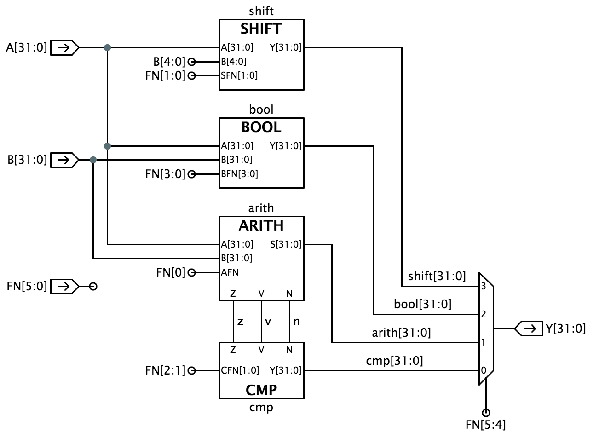
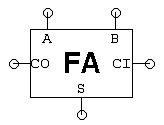

32-bit ALU
When entering numeric values in the answer fields, you can use
integers (1000, 0x3E8, 0b1111101000), floating-point numbers
(1000.0), scientific notation (1e3), engineering scale factors
(1K), or numeric expressions (3*300 + 100).
Useful links:
Problem 1. Design Problem: 32-bit Arithmetic and Logic Unit
See the instructions below.
Use the Jade instance below to enter your design. To complete this
design problem, select the /alu/alu module and click
in the Jade toolbar and the built-in tester
will either report any discrepencies between the expected and actual
outputs, or, if your design is correct, it will record the test passed.
{ "hierarchical": "true",
"parts": ["/gates/.*","/alu/.*","/user/.*"],
"tools": ["check"],
"editors": ["schematic","icon","test"],
"edit": "/alu/alu",
"required_tests": ["936fccfa4372c323a3f696b9fa670991"] ,
"initial_state": {
"/alu/arith":{"properties":{"icon-readonly":"true","test-readonly":"true","name":{"label":"Name","type":"string","value":"","edit":"yes","choices":[""]},"test-readonly":{"label":"Test readonly","type":"string","value":"true","edit":"yes","choices":[""]}},"schematic":[["port",[56,-80,0],{"signal":"A[31:0]"}],["port",[56,-64,0],{"signal":"B[31:0]"}],["port",[56,-48,0],{"signal":"AFN"}],["port",[144,-32,4],{"signal":"S[31:0]","direction":"out"}],["port",[144,-48,4],{"signal":"V","direction":"out"}],["port",[144,-64,4],{"signal":"N","direction":"out"}],["port",[144,-80,4],{"signal":"Z","direction":"out"}],["wire",[136,-80,0,-8,0],{"signal":"0'1"}],["wire",[136,-64,0,-8,0],{"signal":"0'1"}],["wire",[136,-48,0,-8,0],{"signal":"0'1"}],["wire",[136,-32,0,-8,0],{"signal":"0'32"}],["jumper",[136,-80,0]],["jumper",[136,-64,0]],["jumper",[136,-48,0]],["jumper",[136,-32,0]]],"icon":[["text",[0,-11,0],{"text":"ARITH","font":"bold 6pt sans-serif","align":"center"}],["terminal",[-32,0,0],{"name":"A[31:0]"}],["terminal",[-32,8,0],{"name":"B[31:0]"}],["terminal",[-32,16,0],{"name":"AFN"}],["terminal",[32,0,4],{"name":"S[31:0]"}],["text",[-23,8,0],{"text":"B[31:0]","font":"4pt sans-serif"}],["text",[-23,0,0],{"text":"A[31:0]","font":"4pt sans-serif"}],["text",[-23,16,0],{"text":"AFN","font":"4pt sans-serif"}],["text",[23,0,0],{"text":"S[31:0]","font":"4pt sans-serif","align":"center-right"}],["line",[-24,-16,0,48,0]],["line",[24,32,0,-48,0]],["property",[0,-17,0],{"format":"{name}","align":"bottom-center"}],["terminal",[-16,40,5],{"name":"Z"}],["terminal",[0,40,5],{"name":"V"}],["terminal",[16,40,5],{"name":"N"}],["text",[-16,31,0],{"text":"Z","font":"4pt sans-serif","align":"bottom-center"}],["text",[0,31,0],{"text":"V","font":"4pt sans-serif","align":"bottom-center"}],["text",[16,31,0],{"text":"N","font":"4pt sans-serif","align":"bottom-center"}],["line",[-24,-16,0,0,48]],["line",[24,-16,0,0,48]]],"test":[["test",".power Vdd=1\n.thresholds Vol=0 Vil=0.1 Vih=0.9 Voh=1\n\n.group inputs AFN A[31:0] B[31:0]\n.group outputs S[31:0] Z V N\n\n.mode gate\n\n.cycle assert inputs tran 99n sample outputs tran 1n\n\n0 00000000000000000000000000000000 00000000000000000000000000000000 LLLLLLLLLLLLLLLLLLLLLLLLLLLLLLLL HLL // 1: afn=0, a=0X00000000, b=0X00000000, s=0X00000000\n0 00000000000000000000000000000000 00000000000000000000000000000001 LLLLLLLLLLLLLLLLLLLLLLLLLLLLLLLH LLL // 2: afn=0, a=0X00000000, b=0X00000001, s=0X00000001\n0 00000000000000000000000000000000 11111111111111111111111111111111 HHHHHHHHHHHHHHHHHHHHHHHHHHHHHHHH LLH // 3: afn=0, a=0X00000000, b=0XFFFFFFFF, s=0XFFFFFFFF\n0 00000000000000000000000000000000 10101010101010101010101010101010 HLHLHLHLHLHLHLHLHLHLHLHLHLHLHLHL LLH // 4: afn=0, a=0X00000000, b=0XAAAAAAAA, s=0XAAAAAAAA\n0 00000000000000000000000000000000 01010101010101010101010101010101 LHLHLHLHLHLHLHLHLHLHLHLHLHLHLHLH LLL // 5: afn=0, a=0X00000000, b=0X55555555, s=0X55555555\n0 00000000000000000000000000000001 00000000000000000000000000000000 LLLLLLLLLLLLLLLLLLLLLLLLLLLLLLLH LLL // 6: afn=0, a=0X00000001, b=0X00000000, s=0X00000001\n0 00000000000000000000000000000001 00000000000000000000000000000001 LLLLLLLLLLLLLLLLLLLLLLLLLLLLLLHL LLL // 7: afn=0, a=0X00000001, b=0X00000001, s=0X00000002\n0 00000000000000000000000000000001 11111111111111111111111111111111 LLLLLLLLLLLLLLLLLLLLLLLLLLLLLLLL HLL // 8: afn=0, a=0X00000001, b=0XFFFFFFFF, s=0X00000000\n0 00000000000000000000000000000001 10101010101010101010101010101010 HLHLHLHLHLHLHLHLHLHLHLHLHLHLHLHH LLH // 9: afn=0, a=0X00000001, b=0XAAAAAAAA, s=0XAAAAAAAB\n0 00000000000000000000000000000001 01010101010101010101010101010101 LHLHLHLHLHLHLHLHLHLHLHLHLHLHLHHL LLL // 10: afn=0, a=0X00000001, b=0X55555555, s=0X55555556\n0 11111111111111111111111111111111 00000000000000000000000000000000 HHHHHHHHHHHHHHHHHHHHHHHHHHHHHHHH LLH // 11: afn=0, a=0XFFFFFFFF, b=0X00000000, s=0XFFFFFFFF\n0 11111111111111111111111111111111 00000000000000000000000000000001 LLLLLLLLLLLLLLLLLLLLLLLLLLLLLLLL HLL // 12: afn=0, a=0XFFFFFFFF, b=0X00000001, s=0X00000000\n0 11111111111111111111111111111111 11111111111111111111111111111111 HHHHHHHHHHHHHHHHHHHHHHHHHHHHHHHL LLH // 13: afn=0, a=0XFFFFFFFF, b=0XFFFFFFFF, s=0XFFFFFFFE\n0 11111111111111111111111111111111 10101010101010101010101010101010 HLHLHLHLHLHLHLHLHLHLHLHLHLHLHLLH LLH // 14: afn=0, a=0XFFFFFFFF, b=0XAAAAAAAA, s=0XAAAAAAA9\n0 11111111111111111111111111111111 01010101010101010101010101010101 LHLHLHLHLHLHLHLHLHLHLHLHLHLHLHLL LLL // 15: afn=0, a=0XFFFFFFFF, b=0X55555555, s=0X55555554\n0 10101010101010101010101010101010 00000000000000000000000000000000 HLHLHLHLHLHLHLHLHLHLHLHLHLHLHLHL LLH // 16: afn=0, a=0XAAAAAAAA, b=0X00000000, s=0XAAAAAAAA\n0 10101010101010101010101010101010 00000000000000000000000000000001 HLHLHLHLHLHLHLHLHLHLHLHLHLHLHLHH LLH // 17: afn=0, a=0XAAAAAAAA, b=0X00000001, s=0XAAAAAAAB\n0 10101010101010101010101010101010 11111111111111111111111111111111 HLHLHLHLHLHLHLHLHLHLHLHLHLHLHLLH LLH // 18: afn=0, a=0XAAAAAAAA, b=0XFFFFFFFF, s=0XAAAAAAA9\n0 10101010101010101010101010101010 10101010101010101010101010101010 LHLHLHLHLHLHLHLHLHLHLHLHLHLHLHLL LHL // 19: afn=0, a=0XAAAAAAAA, b=0XAAAAAAAA, s=0X55555554\n0 10101010101010101010101010101010 01010101010101010101010101010101 HHHHHHHHHHHHHHHHHHHHHHHHHHHHHHHH LLH // 20: afn=0, a=0XAAAAAAAA, b=0X55555555, s=0XFFFFFFFF\n0 01010101010101010101010101010101 00000000000000000000000000000000 LHLHLHLHLHLHLHLHLHLHLHLHLHLHLHLH LLL // 21: afn=0, a=0X55555555, b=0X00000000, s=0X55555555\n0 01010101010101010101010101010101 00000000000000000000000000000001 LHLHLHLHLHLHLHLHLHLHLHLHLHLHLHHL LLL // 22: afn=0, a=0X55555555, b=0X00000001, s=0X55555556\n0 01010101010101010101010101010101 11111111111111111111111111111111 LHLHLHLHLHLHLHLHLHLHLHLHLHLHLHLL LLL // 23: afn=0, a=0X55555555, b=0XFFFFFFFF, s=0X55555554\n0 01010101010101010101010101010101 10101010101010101010101010101010 HHHHHHHHHHHHHHHHHHHHHHHHHHHHHHHH LLH // 24: afn=0, a=0X55555555, b=0XAAAAAAAA, s=0XFFFFFFFF\n0 01010101010101010101010101010101 01010101010101010101010101010101 HLHLHLHLHLHLHLHLHLHLHLHLHLHLHLHL LHH // 25: afn=0, a=0X55555555, b=0X55555555, s=0XAAAAAAAA\n1 00000000000000000000000000000000 00000000000000000000000000000000 LLLLLLLLLLLLLLLLLLLLLLLLLLLLLLLL HLL // 26: fn=1, a=0X00000000, b=0X00000000, s=0X00000000\n1 00000000000000000000000000000000 00000000000000000000000000000001 HHHHHHHHHHHHHHHHHHHHHHHHHHHHHHHH LLH // 27: fn=1, a=0X00000000, b=0X00000001, s=0XFFFFFFFF\n1 00000000000000000000000000000000 11111111111111111111111111111111 LLLLLLLLLLLLLLLLLLLLLLLLLLLLLLLH LLL // 28: fn=1, a=0X00000000, b=0XFFFFFFFF, s=0X00000001\n1 00000000000000000000000000000000 10101010101010101010101010101010 LHLHLHLHLHLHLHLHLHLHLHLHLHLHLHHL LLL // 29: fn=1, a=0X00000000, b=0XAAAAAAAA, s=0X55555556\n1 00000000000000000000000000000000 01010101010101010101010101010101 HLHLHLHLHLHLHLHLHLHLHLHLHLHLHLHH LLH // 30: fn=1, a=0X00000000, b=0X55555555, s=0XAAAAAAAB\n1 00000000000000000000000000000001 00000000000000000000000000000000 LLLLLLLLLLLLLLLLLLLLLLLLLLLLLLLH LLL // 31: fn=1, a=0X00000001, b=0X00000000, s=0X00000001\n1 00000000000000000000000000000001 00000000000000000000000000000001 LLLLLLLLLLLLLLLLLLLLLLLLLLLLLLLL HLL // 32: fn=1, a=0X00000001, b=0X00000001, s=0X00000000\n1 00000000000000000000000000000001 11111111111111111111111111111111 LLLLLLLLLLLLLLLLLLLLLLLLLLLLLLHL LLL // 33: fn=1, a=0X00000001, b=0XFFFFFFFF, s=0X00000002\n1 00000000000000000000000000000001 10101010101010101010101010101010 LHLHLHLHLHLHLHLHLHLHLHLHLHLHLHHH LLL // 34: fn=1, a=0X00000001, b=0XAAAAAAAA, s=0X55555557\n1 00000000000000000000000000000001 01010101010101010101010101010101 HLHLHLHLHLHLHLHLHLHLHLHLHLHLHHLL LLH // 35: fn=1, a=0X00000001, b=0X55555555, s=0XAAAAAAAC\n1 11111111111111111111111111111111 00000000000000000000000000000000 HHHHHHHHHHHHHHHHHHHHHHHHHHHHHHHH LLH // 36: fn=1, a=0XFFFFFFFF, b=0X00000000, s=0XFFFFFFFF\n1 11111111111111111111111111111111 00000000000000000000000000000001 HHHHHHHHHHHHHHHHHHHHHHHHHHHHHHHL LLH // 37: fn=1, a=0XFFFFFFFF, b=0X00000001, s=0XFFFFFFFE\n1 11111111111111111111111111111111 11111111111111111111111111111111 LLLLLLLLLLLLLLLLLLLLLLLLLLLLLLLL HLL // 38: fn=1, a=0XFFFFFFFF, b=0XFFFFFFFF, s=0X00000000\n1 11111111111111111111111111111111 10101010101010101010101010101010 LHLHLHLHLHLHLHLHLHLHLHLHLHLHLHLH LLL // 39: fn=1, a=0XFFFFFFFF, b=0XAAAAAAAA, s=0X55555555\n1 11111111111111111111111111111111 01010101010101010101010101010101 HLHLHLHLHLHLHLHLHLHLHLHLHLHLHLHL LLH // 40: fn=1, a=0XFFFFFFFF, b=0X55555555, s=0XAAAAAAAA\n1 10101010101010101010101010101010 00000000000000000000000000000000 HLHLHLHLHLHLHLHLHLHLHLHLHLHLHLHL LLH // 41: fn=1, a=0XAAAAAAAA, b=0X00000000, s=0XAAAAAAAA\n1 10101010101010101010101010101010 00000000000000000000000000000001 HLHLHLHLHLHLHLHLHLHLHLHLHLHLHLLH LLH // 42: fn=1, a=0XAAAAAAAA, b=0X00000001, s=0XAAAAAAA9\n1 10101010101010101010101010101010 11111111111111111111111111111111 HLHLHLHLHLHLHLHLHLHLHLHLHLHLHLHH LLH // 43: fn=1, a=0XAAAAAAAA, b=0XFFFFFFFF, s=0XAAAAAAAB\n1 10101010101010101010101010101010 10101010101010101010101010101010 LLLLLLLLLLLLLLLLLLLLLLLLLLLLLLLL HLL // 44: fn=1, a=0XAAAAAAAA, b=0XAAAAAAAA, s=0X00000000\n1 10101010101010101010101010101010 01010101010101010101010101010101 LHLHLHLHLHLHLHLHLHLHLHLHLHLHLHLH LHL // 45: fn=1, a=0XAAAAAAAA, b=0X55555555, s=0X55555555\n1 01010101010101010101010101010101 00000000000000000000000000000000 LHLHLHLHLHLHLHLHLHLHLHLHLHLHLHLH LLL // 46: fn=1, a=0X55555555, b=0X00000000, s=0X55555555\n1 01010101010101010101010101010101 00000000000000000000000000000001 LHLHLHLHLHLHLHLHLHLHLHLHLHLHLHLL LLL // 47: fn=1, a=0X55555555, b=0X00000001, s=0X55555554\n1 01010101010101010101010101010101 11111111111111111111111111111111 LHLHLHLHLHLHLHLHLHLHLHLHLHLHLHHL LLL // 48: fn=1, a=0X55555555, b=0XFFFFFFFF, s=0X55555556\n1 01010101010101010101010101010101 10101010101010101010101010101010 HLHLHLHLHLHLHLHLHLHLHLHLHLHLHLHH LHH // 49: fn=1, a=0X55555555, b=0XAAAAAAAA, s=0XAAAAAAAB\n1 01010101010101010101010101010101 01010101010101010101010101010101 LLLLLLLLLLLLLLLLLLLLLLLLLLLLLLLL HLL // 50: fn=1, a=0X55555555, b=0X55555555, s=0X00000000\n1 01111111111111111111111111111111 11111111111111111111111111111111 HLLLLLLLLLLLLLLLLLLLLLLLLLLLLLLL LHH // 51: fn=1, a=0X7FFFFFFF, b=0XFFFFFFFF, s=0X80000000\n1 00111111111111111111111111111111 11111111111111111111111111111111 LHLLLLLLLLLLLLLLLLLLLLLLLLLLLLLL LLL // 52: fn=1, a=0X3FFFFFFF, b=0XFFFFFFFF, s=0X40000000\n1 00011111111111111111111111111111 11111111111111111111111111111111 LLHLLLLLLLLLLLLLLLLLLLLLLLLLLLLL LLL // 53: fn=1, a=0X1FFFFFFF, b=0XFFFFFFFF, s=0X20000000\n1 00001111111111111111111111111111 11111111111111111111111111111111 LLLHLLLLLLLLLLLLLLLLLLLLLLLLLLLL LLL // 54: fn=1, a=0X0FFFFFFF, b=0XFFFFFFFF, s=0X10000000\n1 00000111111111111111111111111111 11111111111111111111111111111111 LLLLHLLLLLLLLLLLLLLLLLLLLLLLLLLL LLL // 55: fn=1, a=0X07FFFFFF, b=0XFFFFFFFF, s=0X08000000\n1 00000011111111111111111111111111 11111111111111111111111111111111 LLLLLHLLLLLLLLLLLLLLLLLLLLLLLLLL LLL // 56: fn=1, a=0X03FFFFFF, b=0XFFFFFFFF, s=0X04000000\n1 00000001111111111111111111111111 11111111111111111111111111111111 LLLLLLHLLLLLLLLLLLLLLLLLLLLLLLLL LLL // 57: fn=1, a=0X01FFFFFF, b=0XFFFFFFFF, s=0X02000000\n1 00000000111111111111111111111111 11111111111111111111111111111111 LLLLLLLHLLLLLLLLLLLLLLLLLLLLLLLL LLL // 58: fn=1, a=0X00FFFFFF, b=0XFFFFFFFF, s=0X01000000\n1 00000000011111111111111111111111 11111111111111111111111111111111 LLLLLLLLHLLLLLLLLLLLLLLLLLLLLLLL LLL // 59: fn=1, a=0X007FFFFF, b=0XFFFFFFFF, s=0X00800000\n1 00000000001111111111111111111111 11111111111111111111111111111111 LLLLLLLLLHLLLLLLLLLLLLLLLLLLLLLL LLL // 60: fn=1, a=0X003FFFFF, b=0XFFFFFFFF, s=0X00400000\n1 00000000000111111111111111111111 11111111111111111111111111111111 LLLLLLLLLLHLLLLLLLLLLLLLLLLLLLLL LLL // 61: fn=1, a=0X001FFFFF, b=0XFFFFFFFF, s=0X00200000\n1 00000000000011111111111111111111 11111111111111111111111111111111 LLLLLLLLLLLHLLLLLLLLLLLLLLLLLLLL LLL // 62: fn=1, a=0X000FFFFF, b=0XFFFFFFFF, s=0X00100000\n1 00000000000001111111111111111111 11111111111111111111111111111111 LLLLLLLLLLLLHLLLLLLLLLLLLLLLLLLL LLL // 63: fn=1, a=0X0007FFFF, b=0XFFFFFFFF, s=0X00080000\n1 00000000000000111111111111111111 11111111111111111111111111111111 LLLLLLLLLLLLLHLLLLLLLLLLLLLLLLLL LLL // 64: fn=1, a=0X0003FFFF, b=0XFFFFFFFF, s=0X00040000\n1 00000000000000011111111111111111 11111111111111111111111111111111 LLLLLLLLLLLLLLHLLLLLLLLLLLLLLLLL LLL // 65: fn=1, a=0X0001FFFF, b=0XFFFFFFFF, s=0X00020000\n1 00000000000000001111111111111111 11111111111111111111111111111111 LLLLLLLLLLLLLLLHLLLLLLLLLLLLLLLL LLL // 66: fn=1, a=0X0000FFFF, b=0XFFFFFFFF, s=0X00010000\n1 00000000000000000111111111111111 11111111111111111111111111111111 LLLLLLLLLLLLLLLLHLLLLLLLLLLLLLLL LLL // 67: fn=1, a=0X00007FFF, b=0XFFFFFFFF, s=0X00008000\n1 00000000000000000011111111111111 11111111111111111111111111111111 LLLLLLLLLLLLLLLLLHLLLLLLLLLLLLLL LLL // 68: fn=1, a=0X00003FFF, b=0XFFFFFFFF, s=0X00004000\n1 00000000000000000001111111111111 11111111111111111111111111111111 LLLLLLLLLLLLLLLLLLHLLLLLLLLLLLLL LLL // 69: fn=1, a=0X00001FFF, b=0XFFFFFFFF, s=0X00002000\n1 00000000000000000000111111111111 11111111111111111111111111111111 LLLLLLLLLLLLLLLLLLLHLLLLLLLLLLLL LLL // 70: fn=1, a=0X00000FFF, b=0XFFFFFFFF, s=0X00001000\n1 00000000000000000000011111111111 11111111111111111111111111111111 LLLLLLLLLLLLLLLLLLLLHLLLLLLLLLLL LLL // 71: fn=1, a=0X000007FF, b=0XFFFFFFFF, s=0X00000800\n1 00000000000000000000001111111111 11111111111111111111111111111111 LLLLLLLLLLLLLLLLLLLLLHLLLLLLLLLL LLL // 72: fn=1, a=0X000003FF, b=0XFFFFFFFF, s=0X00000400\n1 00000000000000000000000111111111 11111111111111111111111111111111 LLLLLLLLLLLLLLLLLLLLLLHLLLLLLLLL LLL // 73: fn=1, a=0X700001FF, b=0XFFFFFFFF, s=0X00000200\n1 00000000000000000000000011111111 11111111111111111111111111111111 LLLLLLLLLLLLLLLLLLLLLLLHLLLLLLLL LLL // 74: fn=1, a=0X000000FF, b=0XFFFFFFFF, s=0X00000100\n1 00000000000000000000000001111111 11111111111111111111111111111111 LLLLLLLLLLLLLLLLLLLLLLLLHLLLLLLL LLL // 75: fn=1, a=0X0000007F, b=0XFFFFFFFF, s=0X00000080\n1 00000000000000000000000000111111 11111111111111111111111111111111 LLLLLLLLLLLLLLLLLLLLLLLLLHLLLLLL LLL // 76: fn=1, a=0X0000003F, b=0XFFFFFFFF, s=0X00000040\n1 00000000000000000000000000011111 11111111111111111111111111111111 LLLLLLLLLLLLLLLLLLLLLLLLLLHLLLLL LLL // 77: fn=1, a=0X0000001F, b=0XFFFFFFFF, s=0X00000020\n1 00000000000000000000000000001111 11111111111111111111111111111111 LLLLLLLLLLLLLLLLLLLLLLLLLLLHLLLL LLL // 78: fn=1, a=0X0000000F, b=0XFFFFFFFF, s=0X00000010\n1 00000000000000000000000000000111 11111111111111111111111111111111 LLLLLLLLLLLLLLLLLLLLLLLLLLLLHLLL LLL // 79: fn=1, a=0X00000007, b=0XFFFFFFFF, s=0X00000008\n1 00000000000000000000000000000011 11111111111111111111111111111111 LLLLLLLLLLLLLLLLLLLLLLLLLLLLLHLL LLL // 80: fn=1, a=0X00000003, b=0XFFFFFFFF, s=0X00000004\n1 00000000000000000000000000000001 11111111111111111111111111111111 LLLLLLLLLLLLLLLLLLLLLLLLLLLLLLHL LLL // 81: fn=1, a=0X00000001, b=0XFFFFFFFF, s=0X00000002\n1 00000000000000000000000000000000 11111111111111111111111111111111 LLLLLLLLLLLLLLLLLLLLLLLLLLLLLLLH LLL // 82: fn=1, a=0X00000000, b=0XFFFFFFFF, s=0X00000001\n \n.plot X(AFN)\n.plot X(A[31:0])\n.plot X(B[31:0])\n.plot X(S[31:0])\n.plot Z\n.plot V\n.plot N\n"]]},
"/alu/bool":{"properties":{"icon-readonly":"true","test-readonly":"true","name":{"label":"Name","type":"string","value":"","edit":"yes","choices":[""]},"test-readonly":{"label":"Test readonly","type":"string","value":"true","edit":"yes","choices":[""]}},"test":[["test",".power Vdd=1\n.thresholds Vol=0 Vil=0.1 Vih=0.9 Voh=1\n\n.group inputs BFN[3:0] A[31:0] B[31:0]\n.group outputs Y[31:0]\n\n.mode gate\n\n.cycle assert inputs tran 99n sample outputs tran 1n\n\n0000 11111111000000001111111100000000 11111111111111110000000000000000 LLLLLLLLLLLLLLLLLLLLLLLLLLLLLLLL // 1: bfn=0b0000, a=0XFF00FF00, b=0XFFFF0000, y=0X00000000\n0001 11111111000000001111111100000000 11111111111111110000000000000000 LLLLLLLLLLLLLLLLLLLLLLLLHHHHHHHH // 2: bfn=0b0001, a=0XFF00FF00, b=0XFFFF0000, y=0X000000FF\n0010 11111111000000001111111100000000 11111111111111110000000000000000 LLLLLLLLLLLLLLLLHHHHHHHHLLLLLLLL // 3: bfn=0b0010, a=0XFF00FF00, b=0XFFFF0000, y=0X0000FF00\n0011 11111111000000001111111100000000 11111111111111110000000000000000 LLLLLLLLLLLLLLLLHHHHHHHHHHHHHHHH // 4: bfn=0b0011, a=0XFF00FF00, b=0XFFFF0000, y=0X0000FFFF\n0100 11111111000000001111111100000000 11111111111111110000000000000000 LLLLLLLLHHHHHHHHLLLLLLLLLLLLLLLL // 5: bfn=0b0100, a=0XFF00FF00, b=0XFFFF0000, y=0X00FF0000\n0101 11111111000000001111111100000000 11111111111111110000000000000000 LLLLLLLLHHHHHHHHLLLLLLLLHHHHHHHH // 6: bfn=0b0101, a=0XFF00FF00, b=0XFFFF0000, y=0X00FF00FF\n0110 11111111000000001111111100000000 11111111111111110000000000000000 LLLLLLLLHHHHHHHHHHHHHHHHLLLLLLLL // 7: bfn=0b0110, a=0XFF00FF00, b=0XFFFF0000, y=0X00FFFF00\n0111 11111111000000001111111100000000 11111111111111110000000000000000 LLLLLLLLHHHHHHHHHHHHHHHHHHHHHHHH // 8: bfn=0b0111, a=0XFF00FF00, b=0XFFFF0000, y=0X00FFFFFF\n1000 11111111000000001111111100000000 11111111111111110000000000000000 HHHHHHHHLLLLLLLLLLLLLLLLLLLLLLLL // 9: bfn=0b1000, a=0XFF00FF00, b=0XFFFF0000, y=0XFF000000\n1001 11111111000000001111111100000000 11111111111111110000000000000000 HHHHHHHHLLLLLLLLLLLLLLLLHHHHHHHH // 10: bfn=0b1001, a=0XFF00FF00, b=0XFFFF0000, y=0XFF0000FF\n1010 11111111000000001111111100000000 11111111111111110000000000000000 HHHHHHHHLLLLLLLLHHHHHHHHLLLLLLLL // 11: bfn=0b1010, a=0XFF00FF00, b=0XFFFF0000, y=0XFF00FF00\n1011 11111111000000001111111100000000 11111111111111110000000000000000 HHHHHHHHLLLLLLLLHHHHHHHHHHHHHHHH // 12: bfn=0b1011, a=0XFF00FF00, b=0XFFFF0000, y=0XFF00FFFF\n1100 11111111000000001111111100000000 11111111111111110000000000000000 HHHHHHHHHHHHHHHHLLLLLLLLLLLLLLLL // 13: bfn=0b1100, a=0XFF00FF00, b=0XFFFF0000, y=0XFFFF0000\n1101 11111111000000001111111100000000 11111111111111110000000000000000 HHHHHHHHHHHHHHHHLLLLLLLLHHHHHHHH // 14: bfn=0b1101, a=0XFF00FF00, b=0XFFFF0000, y=0XFFFF00FF\n1110 11111111000000001111111100000000 11111111111111110000000000000000 HHHHHHHHHHHHHHHHHHHHHHHHLLLLLLLL // 15: bfn=0b1110, a=0XFF00FF00, b=0XFFFF0000, y=0XFFFFFF00\n1111 11111111000000001111111100000000 11111111111111110000000000000000 HHHHHHHHHHHHHHHHHHHHHHHHHHHHHHHH // 16: bfn=0b1111, a=0XFF00FF00, b=0XFFFF0000, y=0XFFFFFFFF\n \n.plot X(BFN[3:0])\n.plot X(A[31:0])\n.plot X(B[31:0])\n.plot X(Y[31:0])\n"]],"schematic":[["port",[0,-72,4],{"signal":"Y[31:0]","direction":"out"}],["port",[-88,-56,0],{"signal":"BFN[3:0]"}],["port",[-88,-72,0],{"signal":"B[31:0]"}],["port",[-88,-88,0],{"signal":"A[31:0]"}],["wire",[-8,-72,0,-8,0],{"signal":"0'32"}],["jumper",[-8,-72,0]]],"icon":[["text",[0,-3,0],{"text":"BOOL","font":"bold 6pt sans-serif","align":"center"}],["terminal",[-32,8,0],{"name":"A[31:0]"}],["terminal",[-32,16,0],{"name":"B[31:0]"}],["terminal",[-32,24,0],{"name":"BFN[3:0]"}],["terminal",[32,8,4],{"name":"Y[31:0]"}],["text",[-23,16,0],{"text":"B[31:0]","font":"4pt sans-serif"}],["text",[-23,8,0],{"text":"A[31:0]","font":"4pt sans-serif"}],["text",[-23,24,0],{"text":"BFN[3:0]","font":"4pt sans-serif"}],["text",[23,8,0],{"text":"Y[31:0]","font":"4pt sans-serif","align":"center-right"}],["line",[-24,-8,0,48,0]],["line",[24,32,0,-48,0]],["property",[0,-9,0],{"format":"{name}","align":"bottom-center"}],["line",[-24,-8,0,0,40]],["line",[24,-8,0,0,40]]]},
"/alu/FA":{"properties":{"icon-readonly":"true","test-readonly":"true","name":{"edit":"yes","type":"name","value":"","label":"Name"},"test-readonly":{"label":"Test readonly","type":"string","value":"true","edit":"yes","choices":[""]}},"schematic":[["port",[-72,-48,0],{"signal":"A"}],["port",[-72,-32,0],{"signal":"B"}],["port",[-72,-16,0],{"signal":"Cin"}],["port",[-8,-32,4],{"signal":"Cout","direction":"out"}],["port",[-8,-48,4],{"signal":"S","direction":"out"}]],"icon":[["terminal",[-24,-8,0],{"name":"A"}],["terminal",[-24,8,0],{"name":"B"}],["terminal",[0,32,3],{"name":"Cin"}],["terminal",[24,0,4],{"name":"S"}],["terminal",[0,-32,7],{"name":"Cout"}],["line",[16,-24,0,-32,0]],["line",[-16,24,0,32,0]],["text",[-15,-8,0],{"text":"A","font":"4pt sans-serif"}],["text",[-15,8,0],{"text":"B","font":"4pt sans-serif"}],["text",[15,0,0],{"text":"S","font":"4pt sans-serif","align":"center-right"}],["text",[0,-23,0],{"text":"Cout","font":"4pt sans-serif","align":"top-center"}],["text",[0,23,0],{"text":"Cin","font":"4pt sans-serif","align":"bottom-center"}],["text",[0,0,0],{"text":"FA","align":"center","font":"bold 6pt sans-serif"}],["line",[-16,-24,0,0,48]],["line",[16,-24,0,0,48]]],"test":[["test",".power Vdd=1\n.thresholds Vol=0 Vil=0.1 Vih=0.9 Voh=1\n.mode gate\n\n.group inputs A B Cin\n.group outputs Cout S\n\n.cycle assert inputs tran 9n sample outputs tran 1n\n000 LL\n001 LH\n010 LH\n011 HL\n100 LH\n101 HL\n110 HL\n111 HH\n\n.plot A\n.plot B\n.plot Cin\n.plot Cout\n.plot S\n"]]},
"/alu/cmp":{"properties":{"icon-readonly":"true","test-readonly":"true","name":{"label":"Name","type":"string","value":"","edit":"yes","choices":[""]},"test-readonly":{"label":"Test readonly","type":"string","value":"true","edit":"yes","choices":[""]}},"schematic":[["port",[-56,0,0],{"signal":"V"}],["port",[-56,-16,0],{"signal":"N"}],["port",[24,-16,4],{"signal":"Y[31:1]","direction":"out"}],["port",[24,0,4],{"signal":"Y[0]","direction":"out"}],["jumper",[16,-16,0]],["wire",[16,-16,0,-8,0],{"signal":"0'31"}],["port",[-56,-32,0],{"signal":"Z"}],["port",[-56,16,0],{"signal":"CFN[1:0]"}],["jumper",[16,0,0]],["wire",[16,0,0,-8,0],{"signal":"0'1"}]],"icon":[["text",[0,19,0],{"text":"CMP","font":"bold 6pt sans-serif","align":"center"}],["terminal",[-16,-16,7],{"name":"Z"}],["terminal",[0,-16,7],{"name":"V"}],["terminal",[16,-16,7],{"name":"N"}],["terminal",[32,8,4],{"name":"Y[31:0]"}],["text",[16,-7,0],{"text":"N","font":"4pt sans-serif","align":"top-center"}],["text",[-16,-7,0],{"text":"Z","font":"4pt sans-serif","align":"top-center"}],["text",[-23,8,0],{"text":"CFN[1:0]","font":"4pt sans-serif"}],["text",[23,8,0],{"text":"Y[31:0]","font":"4pt sans-serif","align":"center-right"}],["line",[-24,-8,0,48,0]],["line",[24,24,0,-48,0]],["property",[0,25,0],{"format":"{name}","align":"top-center"}],["text",[0,-7,0],{"text":"V","font":"4pt sans-serif","align":"top-center"}],["terminal",[-32,8,0],{"name":"CFN[1:0]"}],["line",[-24,-8,0,0,32]],["line",[24,-8,0,0,32]]],"test":[["test",".power Vdd=1\n.thresholds Vol=0 Vil=0.1 Vih=0.9 Voh=1\n\n.group inputs CFN[1:0] Z V N\n.group outputs Y[31:0]\n\n.mode gate\n\n.cycle assert inputs tran 99n sample outputs tran 1n\n\n01 000 LLLLLLLLLLLLLLLLLLLLLLLLLLLLLLLL // 1: cfn=CMPEQ, z=0, v=0, n=0, y=0\n10 000 LLLLLLLLLLLLLLLLLLLLLLLLLLLLLLLL // 2: cfn=CMPLT, z=0, v=0, n=0, y=0\n11 000 LLLLLLLLLLLLLLLLLLLLLLLLLLLLLLLL // 3: cfn=CMPLE, z=0, v=0, n=0, y=0\n01 001 LLLLLLLLLLLLLLLLLLLLLLLLLLLLLLLL // 4: cfn=CMPEQ, z=0, v=0, n=1, y=0\n10 001 LLLLLLLLLLLLLLLLLLLLLLLLLLLLLLLH // 5: cfn=CMPLT, z=0, v=0, n=1, y=1\n11 001 LLLLLLLLLLLLLLLLLLLLLLLLLLLLLLLH // 6: cfn=CMPLE, z=0, v=0, n=1, y=1\n01 010 LLLLLLLLLLLLLLLLLLLLLLLLLLLLLLLL // 7: cfn=CMPEQ, z=0, v=1, n=0, y=0\n10 010 LLLLLLLLLLLLLLLLLLLLLLLLLLLLLLLH // 8: cfn=CMPLT, z=0, v=1, n=0, y=1\n11 010 LLLLLLLLLLLLLLLLLLLLLLLLLLLLLLLH // 9: cfn=CMPLE, z=0, v=1, n=0, y=1\n01 011 LLLLLLLLLLLLLLLLLLLLLLLLLLLLLLLL // 10: cfn=CMPEQ, z=0, v=1, n=1, y=0\n10 011 LLLLLLLLLLLLLLLLLLLLLLLLLLLLLLLL // 11: cfn=CMPLT, z=0, v=1, n=1, y=0\n11 011 LLLLLLLLLLLLLLLLLLLLLLLLLLLLLLLL // 12: cfn=CMPLE, z=0, v=1, n=1, y=0\n01 100 LLLLLLLLLLLLLLLLLLLLLLLLLLLLLLLH // 13: cfn=CMPEQ, z=1, v=0, n=0, y=1\n10 100 LLLLLLLLLLLLLLLLLLLLLLLLLLLLLLLL // 14: cfn=CMPLT, z=1, v=0, n=0, y=0\n11 100 LLLLLLLLLLLLLLLLLLLLLLLLLLLLLLLH // 15: cfn=CMPLE, z=1, v=0, n=0, y=1\n01 101 LLLLLLLLLLLLLLLLLLLLLLLLLLLLLLLH // 16: cfn=CMPEQ, z=1, v=0, n=1, y=1\n10 101 LLLLLLLLLLLLLLLLLLLLLLLLLLLLLLLH // 17: fn=CMPLT, z=1, v=0, n=1, y=1\n11 101 LLLLLLLLLLLLLLLLLLLLLLLLLLLLLLLH // 18: fn=CMPLE, z=1, v=0, n=1, y=1\n01 110 LLLLLLLLLLLLLLLLLLLLLLLLLLLLLLLH // 19: fn=CMPEQ, z=1, v=1, n=0, y=1\n10 110 LLLLLLLLLLLLLLLLLLLLLLLLLLLLLLLH // 20: fn=CMPLT, z=1, v=1, n=0, y=1\n11 110 LLLLLLLLLLLLLLLLLLLLLLLLLLLLLLLH // 21: fn=CMPLE, z=1, v=1, n=0, y=1\n \n.plot X(CFN[1:0])\n.plot Z\n.plot V\n.plot N\n.plot X(Y[31:0])\n"]]},
"/alu/shift":{"properties":{"icon-readonly":"true","test-readonly":"true","name":{"label":"Name","type":"string","value":"","edit":"yes","choices":[""]},"test-readonly":{"label":"Test readonly","type":"string","value":"true","edit":"yes","choices":[""]}},"schematic":[["port",[-200,-88,0],{"signal":"A[31:0]"}],["port",[-200,-72,0],{"signal":"B[4:0]"}],["port",[-200,-56,0],{"signal":"SFN[1:0]"}],["port",[-128,-72,4],{"signal":"Y[31:0]","direction":"out"}],["jumper",[-136,-72,0]],["wire",[-136,-72,0,-8,0],{"signal":"0'32"}]],"icon":[["text",[0,-11,0],{"text":"SHIFT","font":"bold 6pt sans-serif","align":"center"}],["terminal",[-32,0,0],{"name":"A[31:0]"}],["terminal",[-32,8,0],{"name":"B[4:0]"}],["terminal",[-32,16,0],{"name":"SFN[1:0]"}],["terminal",[32,0,4],{"name":"Y[31:0]"}],["text",[-23,8,0],{"text":"B[4:0]","font":"4pt sans-serif"}],["text",[-23,0,0],{"text":"A[31:0]","font":"4pt sans-serif"}],["text",[-23,16,0],{"text":"SFN[1:0]","font":"4pt sans-serif"}],["text",[23,0,0],{"text":"Y[31:0]","font":"4pt sans-serif","align":"center-right"}],["line",[-24,-16,0,48,0]],["line",[24,24,0,-48,0]],["property",[0,-17,0],{"format":"{name}","align":"bottom-center"}],["line",[-24,-16,0,0,40]],["line",[24,-16,0,0,40]]],"test":[["test",".power Vdd=1\n.thresholds Vol=0 Vil=0.1 Vih=0.9 Voh=1\n\n.group inputs SFN[1:0] A[31:0] B[4:0]\n.group outputs Y[31:0]\n\n.mode gate\n\n.cycle assert inputs tran 99n sample outputs tran 1n\n\n00 00000000000000000000000000000000 00000 LLLLLLLLLLLLLLLLLLLLLLLLLLLLLLLL // 1: fn=SHL, a=0X00000000, b= 0, y=0X00000000\n01 00000000000000000000000000000000 00000 LLLLLLLLLLLLLLLLLLLLLLLLLLLLLLLL // 2: fn=SHR, a=0X00000000, b= 0, y=0X00000000\n11 00000000000000000000000000000000 00000 LLLLLLLLLLLLLLLLLLLLLLLLLLLLLLLL // 3: fn=SRA, a=0X00000000, b= 0, y=0X00000000\n00 00000000000000000000000000000000 00001 LLLLLLLLLLLLLLLLLLLLLLLLLLLLLLLL // 4: fn=SHL, a=0X00000000, b= 1, y=0X00000000\n01 00000000000000000000000000000000 00001 LLLLLLLLLLLLLLLLLLLLLLLLLLLLLLLL // 5: fn=SHR, a=0X00000000, b= 1, y=0X00000000\n11 00000000000000000000000000000000 00001 LLLLLLLLLLLLLLLLLLLLLLLLLLLLLLLL // 6: fn=SRA, a=0X00000000, b= 1, y=0X00000000\n00 00000000000000000000000000000000 00010 LLLLLLLLLLLLLLLLLLLLLLLLLLLLLLLL // 7: fn=SHL, a=0X00000000, b= 2, y=0X00000000\n01 00000000000000000000000000000000 00010 LLLLLLLLLLLLLLLLLLLLLLLLLLLLLLLL // 8: fn=SHR, a=0X00000000, b= 2, y=0X00000000\n11 00000000000000000000000000000000 00010 LLLLLLLLLLLLLLLLLLLLLLLLLLLLLLLL // 9: fn=SRA, a=0X00000000, b= 2, y=0X00000000\n00 00000000000000000000000000000000 00100 LLLLLLLLLLLLLLLLLLLLLLLLLLLLLLLL // 10: fn=SHL, a=0X00000000, b= 4, y=0X00000000\n01 00000000000000000000000000000000 00100 LLLLLLLLLLLLLLLLLLLLLLLLLLLLLLLL // 11: fn=SHR, a=0X00000000, b= 4, y=0X00000000\n11 00000000000000000000000000000000 00100 LLLLLLLLLLLLLLLLLLLLLLLLLLLLLLLL // 12: fn=SRA, a=0X00000000, b= 4, y=0X00000000\n00 00000000000000000000000000000000 01000 LLLLLLLLLLLLLLLLLLLLLLLLLLLLLLLL // 13: fn=SHL, a=0X00000000, b= 8, y=0X00000000\n01 00000000000000000000000000000000 01000 LLLLLLLLLLLLLLLLLLLLLLLLLLLLLLLL // 14: fn=SHR, a=0X00000000, b= 8, y=0X00000000\n11 00000000000000000000000000000000 01000 LLLLLLLLLLLLLLLLLLLLLLLLLLLLLLLL // 15: fn=SRA, a=0X00000000, b= 8, y=0X00000000\n00 00000000000000000000000000000000 10000 LLLLLLLLLLLLLLLLLLLLLLLLLLLLLLLL // 16: fn=SHL, a=0X00000000, b=16, y=0X00000000\n01 00000000000000000000000000000000 10000 LLLLLLLLLLLLLLLLLLLLLLLLLLLLLLLL // 17: fn=SHR, a=0X00000000, b=16, y=0X00000000\n11 00000000000000000000000000000000 10000 LLLLLLLLLLLLLLLLLLLLLLLLLLLLLLLL // 18: fn=SRA, a=0X00000000, b=16, y=0X00000000\n00 00000000000000000000000000000000 11111 LLLLLLLLLLLLLLLLLLLLLLLLLLLLLLLL // 19: fn=SHL, a=0X00000000, b=31, y=0X00000000\n01 00000000000000000000000000000000 11111 LLLLLLLLLLLLLLLLLLLLLLLLLLLLLLLL // 20: fn=SHR, a=0X00000000, b=31, y=0X00000000\n11 00000000000000000000000000000000 11111 LLLLLLLLLLLLLLLLLLLLLLLLLLLLLLLL // 21: fn=SRA, a=0X00000000, b=31, y=0X00000000\n00 00000000000000000000000000000001 00000 LLLLLLLLLLLLLLLLLLLLLLLLLLLLLLLH // 22: fn=SHL, a=0X00000001, b= 0, y=0X00000001\n01 00000000000000000000000000000001 00000 LLLLLLLLLLLLLLLLLLLLLLLLLLLLLLLH // 23: fn=SHR, a=0X00000001, b= 0, y=0X00000001\n11 00000000000000000000000000000001 00000 LLLLLLLLLLLLLLLLLLLLLLLLLLLLLLLH // 24: fn=SRA, a=0X00000001, b= 0, y=0X00000001\n00 00000000000000000000000000000001 00001 LLLLLLLLLLLLLLLLLLLLLLLLLLLLLLHL // 25: fn=SHL, a=0X00000001, b= 1, y=0X00000002\n01 00000000000000000000000000000001 00001 LLLLLLLLLLLLLLLLLLLLLLLLLLLLLLLL // 26: fn=SHR, a=0X00000001, b= 1, y=0X00000000\n11 00000000000000000000000000000001 00001 LLLLLLLLLLLLLLLLLLLLLLLLLLLLLLLL // 27: fn=SRA, a=0X00000001, b= 1, y=0X00000000\n00 00000000000000000000000000000001 00010 LLLLLLLLLLLLLLLLLLLLLLLLLLLLLHLL // 28: fn=SHL, a=0X00000001, b= 2, y=0X00000004\n01 00000000000000000000000000000001 00010 LLLLLLLLLLLLLLLLLLLLLLLLLLLLLLLL // 29: fn=SHR, a=0X00000001, b= 2, y=0X00000000\n11 00000000000000000000000000000001 00010 LLLLLLLLLLLLLLLLLLLLLLLLLLLLLLLL // 30: fn=SRA, a=0X00000001, b= 2, y=0X00000000\n00 00000000000000000000000000000001 00100 LLLLLLLLLLLLLLLLLLLLLLLLLLLHLLLL // 31: fn=SHL, a=0X00000001, b= 4, y=0X00000010\n01 00000000000000000000000000000001 00100 LLLLLLLLLLLLLLLLLLLLLLLLLLLLLLLL // 32: fn=SHR, a=0X00000001, b= 4, y=0X00000000\n11 00000000000000000000000000000001 00100 LLLLLLLLLLLLLLLLLLLLLLLLLLLLLLLL // 33: fn=SRA, a=0X00000001, b= 4, y=0X00000000\n00 00000000000000000000000000000001 01000 LLLLLLLLLLLLLLLLLLLLLLLHLLLLLLLL // 34: fn=SHL, a=0X00000001, b= 8, y=0X00000100\n01 00000000000000000000000000000001 01000 LLLLLLLLLLLLLLLLLLLLLLLLLLLLLLLL // 35: fn=SHR, a=0X00000001, b= 8, y=0X00000000\n11 00000000000000000000000000000001 01000 LLLLLLLLLLLLLLLLLLLLLLLLLLLLLLLL // 36: fn=SRA, a=0X00000001, b= 8, y=0X00000000\n00 00000000000000000000000000000001 10000 LLLLLLLLLLLLLLLHLLLLLLLLLLLLLLLL // 37: fn=SHL, a=0X00000001, b=16, y=0X00010000\n01 00000000000000000000000000000001 10000 LLLLLLLLLLLLLLLLLLLLLLLLLLLLLLLL // 38: fn=SHR, a=0X00000001, b=16, y=0X00000000\n11 00000000000000000000000000000001 10000 LLLLLLLLLLLLLLLLLLLLLLLLLLLLLLLL // 39: fn=SRA, a=0X00000001, b=16, y=0X00000000\n00 00000000000000000000000000000001 11111 HLLLLLLLLLLLLLLLLLLLLLLLLLLLLLLL // 40: fn=SHL, a=0X00000001, b=31, y=0X80000000\n01 00000000000000000000000000000001 11111 LLLLLLLLLLLLLLLLLLLLLLLLLLLLLLLL // 41: fn=SHR, a=0X00000001, b=31, y=0X00000000\n11 00000000000000000000000000000001 11111 LLLLLLLLLLLLLLLLLLLLLLLLLLLLLLLL // 42: fn=SRA, a=0X00000001, b=31, y=0X00000000\n00 11111111111111111111111111111111 00000 HHHHHHHHHHHHHHHHHHHHHHHHHHHHHHHH // 43: fn=SHL, a=0XFFFFFFFF, b= 0, y=0XFFFFFFFF\n01 11111111111111111111111111111111 00000 HHHHHHHHHHHHHHHHHHHHHHHHHHHHHHHH // 44: fn=SHR, a=0XFFFFFFFF, b= 0, y=0XFFFFFFFF\n11 11111111111111111111111111111111 00000 HHHHHHHHHHHHHHHHHHHHHHHHHHHHHHHH // 45: fn=SRA, a=0XFFFFFFFF, b= 0, y=0XFFFFFFFF\n00 11111111111111111111111111111111 00001 HHHHHHHHHHHHHHHHHHHHHHHHHHHHHHHL // 46: fn=SHL, a=0XFFFFFFFF, b= 1, y=0XFFFFFFFE\n01 11111111111111111111111111111111 00001 LHHHHHHHHHHHHHHHHHHHHHHHHHHHHHHH // 47: fn=SHR, a=0XFFFFFFFF, b= 1, y=0X7FFFFFFF\n11 11111111111111111111111111111111 00001 HHHHHHHHHHHHHHHHHHHHHHHHHHHHHHHH // 48: fn=SRA, a=0XFFFFFFFF, b= 1, y=0XFFFFFFFF\n00 11111111111111111111111111111111 00010 HHHHHHHHHHHHHHHHHHHHHHHHHHHHHHLL // 49: fn=SHL, a=0XFFFFFFFF, b= 2, y=0XFFFFFFFC\n01 11111111111111111111111111111111 00010 LLHHHHHHHHHHHHHHHHHHHHHHHHHHHHHH // 50: fn=SHR, a=0XFFFFFFFF, b= 2, y=0X3FFFFFFF\n11 11111111111111111111111111111111 00010 HHHHHHHHHHHHHHHHHHHHHHHHHHHHHHHH // 51: fn=SRA, a=0XFFFFFFFF, b= 2, y=0XFFFFFFFF\n00 11111111111111111111111111111111 00100 HHHHHHHHHHHHHHHHHHHHHHHHHHHHLLLL // 52: fn=SHL, a=0XFFFFFFFF, b= 4, y=0XFFFFFFF0\n01 11111111111111111111111111111111 00100 LLLLHHHHHHHHHHHHHHHHHHHHHHHHHHHH // 53: fn=SHR, a=0XFFFFFFFF, b= 4, y=0X0FFFFFFF\n11 11111111111111111111111111111111 00100 HHHHHHHHHHHHHHHHHHHHHHHHHHHHHHHH // 54: fn=SRA, a=0XFFFFFFFF, b= 4, y=0XFFFFFFFF\n00 11111111111111111111111111111111 01000 HHHHHHHHHHHHHHHHHHHHHHHHLLLLLLLL // 55: fn=SHL, a=0XFFFFFFFF, b= 8, y=0XFFFFFF00\n01 11111111111111111111111111111111 01000 LLLLLLLLHHHHHHHHHHHHHHHHHHHHHHHH // 56: fn=SHR, a=0XFFFFFFFF, b= 8, y=0X00FFFFFF\n11 11111111111111111111111111111111 01000 HHHHHHHHHHHHHHHHHHHHHHHHHHHHHHHH // 57: fn=SRA, a=0XFFFFFFFF, b= 8, y=0XFFFFFFFF\n00 11111111111111111111111111111111 10000 HHHHHHHHHHHHHHHHLLLLLLLLLLLLLLLL // 58: fn=SHL, a=0XFFFFFFFF, b=16, y=0XFFFF0000\n01 11111111111111111111111111111111 10000 LLLLLLLLLLLLLLLLHHHHHHHHHHHHHHHH // 59: fn=SHR, a=0XFFFFFFFF, b=16, y=0X0000FFFF\n11 11111111111111111111111111111111 10000 HHHHHHHHHHHHHHHHHHHHHHHHHHHHHHHH // 60: fn=SRA, a=0XFFFFFFFF, b=16, y=0XFFFFFFFF\n00 11111111111111111111111111111111 11111 HLLLLLLLLLLLLLLLLLLLLLLLLLLLLLLL // 61: fn=SHL, a=0XFFFFFFFF, b=31, y=0X80000000\n01 11111111111111111111111111111111 11111 LLLLLLLLLLLLLLLLLLLLLLLLLLLLLLLH // 62: fn=SHR, a=0XFFFFFFFF, b=31, y=0X00000001\n11 11111111111111111111111111111111 11111 HHHHHHHHHHHHHHHHHHHHHHHHHHHHHHHH // 63: fn=SRA, a=0XFFFFFFFF, b=31, y=0XFFFFFFFF\n00 00010010001101000101011001111000 00000 LLLHLLHLLLHHLHLLLHLHLHHLLHHHHLLL // 64: fn=SHL, a=0X12345678, b= 0, y=0X12345678\n01 00010010001101000101011001111000 00000 LLLHLLHLLLHHLHLLLHLHLHHLLHHHHLLL // 65: fn=SHR, a=0X12345678, b= 0, y=0X12345678\n11 00010010001101000101011001111000 00000 LLLHLLHLLLHHLHLLLHLHLHHLLHHHHLLL // 66: fn=SRA, a=0X12345678, b= 0, y=0X12345678\n00 00010010001101000101011001111000 00001 LLHLLHLLLHHLHLLLHLHLHHLLHHHHLLLL // 67: fn=SHL, a=0X12345678, b= 1, y=0X2468ACF0\n01 00010010001101000101011001111000 00001 LLLLHLLHLLLHHLHLLLHLHLHHLLHHHHLL // 68: fn=SHR, a=0X12345678, b= 1, y=0X091A2B3C\n11 00010010001101000101011001111000 00001 LLLLHLLHLLLHHLHLLLHLHLHHLLHHHHLL // 69: fn=SRA, a=0X12345678, b= 1, y=0X091A2B3C\n00 00010010001101000101011001111000 00010 LHLLHLLLHHLHLLLHLHLHHLLHHHHLLLLL // 70: fn=SHL, a=0X12345678, b= 2, y=0X48D159E0\n01 00010010001101000101011001111000 00010 LLLLLHLLHLLLHHLHLLLHLHLHHLLHHHHL // 71: fn=SHR, a=0X12345678, b= 2, y=0X048D159E\n11 00010010001101000101011001111000 00010 LLLLLHLLHLLLHHLHLLLHLHLHHLLHHHHL // 72: fn=SRA, a=0X12345678, b= 2, y=0X048D159E\n00 00010010001101000101011001111000 00100 LLHLLLHHLHLLLHLHLHHLLHHHHLLLLLLL // 73: fn=SHL, a=0X12345678, b= 4, y=0X23456780\n01 00010010001101000101011001111000 00100 LLLLLLLHLLHLLLHHLHLLLHLHLHHLLHHH // 74: fn=SHR, a=0X12345678, b= 4, y=0X01234567\n11 00010010001101000101011001111000 00100 LLLLLLLHLLHLLLHHLHLLLHLHLHHLLHHH // 75: fn=SRA, a=0X12345678, b= 4, y=0X01234567\n00 00010010001101000101011001111000 01000 LLHHLHLLLHLHLHHLLHHHHLLLLLLLLLLL // 76: fn=SHL, a=0X12345678, b= 8, y=0X34567800\n01 00010010001101000101011001111000 01000 LLLLLLLLLLLHLLHLLLHHLHLLLHLHLHHL // 77: fn=SHR, a=0X12345678, b= 8, y=0X00123456\n11 00010010001101000101011001111000 01000 LLLLLLLLLLLHLLHLLLHHLHLLLHLHLHHL // 78: fn=SRA, a=0X12345678, b= 8, y=0X00123456\n00 00010010001101000101011001111000 10000 LHLHLHHLLHHHHLLLLLLLLLLLLLLLLLLL // 79: fn=SHL, a=0X12345678, b=16, y=0X56780000\n01 00010010001101000101011001111000 10000 LLLLLLLLLLLLLLLLLLLHLLHLLLHHLHLL // 80: fn=SHR, a=0X12345678, b=16, y=0X00001234\n11 00010010001101000101011001111000 10000 LLLLLLLLLLLLLLLLLLLHLLHLLLHHLHLL // 81: fn=SRA, a=0X12345678, b=16, y=0X00001234\n00 00010010001101000101011001111000 11111 LLLLLLLLLLLLLLLLLLLLLLLLLLLLLLLL // 82: fn=SHL, a=0X12345678, b=31, y=0X00000000\n01 00010010001101000101011001111000 11111 LLLLLLLLLLLLLLLLLLLLLLLLLLLLLLLL // 83: fn=SHR, a=0X12345678, b=31, y=0X00000000\n11 00010010001101000101011001111000 11111 LLLLLLLLLLLLLLLLLLLLLLLLLLLLLLLL // 84: fn=SRA, a=0X12345678, b=31, y=0X00000000\n00 11111110110111001011101010011000 00000 HHHHHHHLHHLHHHLLHLHHHLHLHLLHHLLL // 85: fn=SHL, a=0XFEDCBA98, b= 0, y=0XFEDCBA98\n01 11111110110111001011101010011000 00000 HHHHHHHLHHLHHHLLHLHHHLHLHLLHHLLL // 86: fn=SHR, a=0XFEDCBA98, b= 0, y=0XFEDCBA98\n11 11111110110111001011101010011000 00000 HHHHHHHLHHLHHHLLHLHHHLHLHLLHHLLL // 87: fn=SRA, a=0XFEDCBA98, b= 0, y=0XFEDCBA98\n00 11111110110111001011101010011000 00001 HHHHHHLHHLHHHLLHLHHHLHLHLLHHLLLL // 88: fn=SHL, a=0XFEDCBA98, b= 1, y=0XFDB97530\n01 11111110110111001011101010011000 00001 LHHHHHHHLHHLHHHLLHLHHHLHLHLLHHLL // 89: fn=SHR, a=0XFEDCBA98, b= 1, y=0X7F6E5D4C\n11 11111110110111001011101010011000 00001 HHHHHHHHLHHLHHHLLHLHHHLHLHLLHHLL // 90: fn=SRA, a=0XFEDCBA98, b= 1, y=0XFF6E5D4C\n00 11111110110111001011101010011000 00010 HHHHHLHHLHHHLLHLHHHLHLHLLHHLLLLL // 91: fn=SHL, a=0XFEDCBA98, b= 2, y=0XFB72EA60\n01 11111110110111001011101010011000 00010 LLHHHHHHHLHHLHHHLLHLHHHLHLHLLHHL // 92: fn=SHR, a=0XFEDCBA98, b= 2, y=0X3FB72EA6\n11 11111110110111001011101010011000 00010 HHHHHHHHHLHHLHHHLLHLHHHLHLHLLHHL // 93: fn=SRA, a=0XFEDCBA98, b= 2, y=0XFFB72EA6\n00 11111110110111001011101010011000 00100 HHHLHHLHHHLLHLHHHLHLHLLHHLLLLLLL // 94: fn=SHL, a=0XFEDCBA98, b= 4, y=0XEDCBA980\n01 11111110110111001011101010011000 00100 LLLLHHHHHHHLHHLHHHLLHLHHHLHLHLLH // 95: fn=SHR, a=0XFEDCBA98, b= 4, y=0X0FEDCBA9\n11 11111110110111001011101010011000 00100 HHHHHHHHHHHLHHLHHHLLHLHHHLHLHLLH // 96: fn=SRA, a=0XFEDCBA98, b= 4, y=0XFFEDCBA9\n00 11111110110111001011101010011000 01000 HHLHHHLLHLHHHLHLHLLHHLLLLLLLLLLL // 97: fn=SHL, a=0XFEDCBA98, b= 8, y=0XDCBA9800\n01 11111110110111001011101010011000 01000 LLLLLLLLHHHHHHHLHHLHHHLLHLHHHLHL // 98: fn=SHR, a=0XFEDCBA98, b= 8, y=0X00FEDCBA\n11 11111110110111001011101010011000 01000 HHHHHHHHHHHHHHHLHHLHHHLLHLHHHLHL // 99: fn=SRA, a=0XFEDCBA98, b= 8, y=0XFFFEDCBA\n00 11111110110111001011101010011000 10000 HLHHHLHLHLLHHLLLLLLLLLLLLLLLLLLL // 100: fn=SHL, a=0XFEDCBA98, b=16, y=0XBA980000\n01 11111110110111001011101010011000 10000 LLLLLLLLLLLLLLLLHHHHHHHLHHLHHHLL // 101: fn=SHR, a=0XFEDCBA98, b=16, y=0X0000FEDC\n11 11111110110111001011101010011000 10000 HHHHHHHHHHHHHHHHHHHHHHHLHHLHHHLL // 102: fn=SRA, a=0XFEDCBA98, b=16, y=0XFFFFFEDC\n00 11111110110111001011101010011000 11111 LLLLLLLLLLLLLLLLLLLLLLLLLLLLLLLL // 103: fn=SHL, a=0XFEDCBA98, b=31, y=0X00000000\n01 11111110110111001011101010011000 11111 LLLLLLLLLLLLLLLLLLLLLLLLLLLLLLLH // 104: fn=SHR, a=0XFEDCBA98, b=31, y=0X00000001\n11 11111110110111001011101010011000 11111 HHHHHHHHHHHHHHHHHHHHHHHHHHHHHHHH // 105: fn=SRA, a=0XFEDCBA98, b=31, y=0XFFFFFFFF\n\n.plot X(SFN[1:0])\n.plot X(A[31:0])\n.plot X(B[4:0])\n.plot X(Y[31:0])"]]},
"/alu/alu":{"properties":{"readonly":"true","name":{"label":"Name","type":"string","value":"","edit":"yes","choices":[""]}},"schematic":[["/alu/bool",[-32,-40,0],{"name":"bool"}],["/alu/cmp",[-32,88,0],{"name":"cmp"}],["wire",[-64,96,0,-8,0],{"signal":"FN[2:1]"}],["wire",[-64,-16,0,-8,0],{"signal":"FN[3:0]"}],["port",[-128,-88,0],{"signal":"A[31:0]"}],["port",[-128,-24,0],{"signal":"B[31:0]"}],["port",[-128,48,0],{"signal":"FN[5:0]"}],["port",[104,72,4],{"signal":"Y[31:0]","direction":"out"}],["wire",[-64,-72,0,-8,0],{"signal":"FN[1:0]"}],["/alu/arith",[-32,24,0],{"name":"arith"}],["wire",[-64,40,0,-8,0],{"signal":"FN[0]"}],["wire",[-120,24,0,56,0]],["wire",[-64,-80,0,-8,0],{"signal":"B[4:0]"}],["wire",[-64,-88,0,-56,0]],["/gates/mux4",[88,48,0]],["wire",[-120,-32,0,56,0]],["wire",[96,112,0,0,8],{"signal":"FN[5:4]"}],["/alu/shift",[-32,-88,0],{"name":"shift"}],["wire",[-48,64,0,0,8],{"signal":"z"}],["wire",[-32,64,0,0,8],{"signal":"v"}],["wire",[-16,64,0,0,8],{"signal":"n"}],["wire",[-64,-24,0,-64,0]],["wire",[-64,32,0,-64,0]],["wire",[-128,-88,0,8,0]],["wire",[0,-88,0,48,0]],["wire",[0,24,0,8,0]],["wire",[8,24,0,0,56]],["wire",[0,-32,0,32,0]],["wire",[-120,-32,0,0,56]],["wire",[-120,-88,0,0,56]],["wire",[-128,-24,0,0,56]],["wire",[48,-88,0,0,136]],["wire",[32,-32,0,0,96]],["wire",[48,48,0,40,0],{"signal":"shift[31:0]"}],["wire",[32,64,0,56,0],{"signal":"bool[31:0]"}],["wire",[8,80,0,80,0],{"signal":"arith[31:0]"}],["wire",[0,96,0,88,0],{"signal":"cmp[31:0]"}]],"icon":[["text",[-8,-8,0],{"text":"ALU","font":"bold 6pt sans-serif","align":"center"}],["terminal",[-32,-16,0],{"name":"B[31:0]"}],["terminal",[-32,16,0],{"name":"A[31:0]"}],["terminal",[-8,40,3],{"name":"FN[5:0]"}],["terminal",[16,0,4],{"name":"Y[31:0]"}],["text",[-23,16,0],{"text":"A[31:0]","font":"4pt sans-serif"}],["text",[-23,-16,0],{"text":"B[31:0]","font":"4pt sans-serif"}],["text",[7,0,0],{"text":"Y[31:0]","font":"4pt sans-serif","align":"center-right"}],["text",[-8,25,0],{"text":"FN[5:0]","font":"4pt sans-serif","align":"bottom-center"}],["line",[-24,-3,0,4,3]],["line",[-20,0,0,-4,3]],["line",[-24,32,0,32,-12]],["line",[8,-21,0,-32,-11]],["line",[-24,-32,0,0,29]],["line",[-24,3,0,0,29]],["line",[8,-21,0,0,41]],["property",[-8,-27,0],{"format":"{name}","align":"bottom-left"}],["line",[-8,32,0,0,-6]]],"test":[["test",".power Vdd=1\n.thresholds Vol=0 Vil=0.1 Vih=0.9 Voh=1\n\n.group inputs FN[5:0] A[31:0] B[31:0]\n.group outputs Y[31:0] Z V N\n\n.mode gate\n\n.cycle assert inputs tran 99n sample outputs tran 1n\n\n100000 11111111000000001111111100000000 11111111111111110000000000000000 LLLLLLLLLLLLLLLLLLLLLLLLLLLLLLLL LLH // 1: fn=F0000, a=0xff00ff00, b=0xffff0000, y=0x00000000\n100001 11111111000000001111111100000000 11111111111111110000000000000000 LLLLLLLLLLLLLLLLLLLLLLLLHHHHHHHH LLH // 2: fn=F0001, a=0xff00ff00, b=0xffff0000, y=0x000000ff\n100010 11111111000000001111111100000000 11111111111111110000000000000000 LLLLLLLLLLLLLLLLHHHHHHHHLLLLLLLL LLH // 3: fn=F0010, a=0xff00ff00, b=0xffff0000, y=0x0000ff00\n100011 11111111000000001111111100000000 11111111111111110000000000000000 LLLLLLLLLLLLLLLLHHHHHHHHHHHHHHHH LLH // 4: fn=F0011, a=0xff00ff00, b=0xffff0000, y=0x0000ffff\n100100 11111111000000001111111100000000 11111111111111110000000000000000 LLLLLLLLHHHHHHHHLLLLLLLLLLLLLLLL LLH // 5: fn=F0100, a=0xff00ff00, b=0xffff0000, y=0x00ff0000\n100101 11111111000000001111111100000000 11111111111111110000000000000000 LLLLLLLLHHHHHHHHLLLLLLLLHHHHHHHH LLH // 6: fn=F0101, a=0xff00ff00, b=0xffff0000, y=0x00ff00ff\n100110 11111111000000001111111100000000 11111111111111110000000000000000 LLLLLLLLHHHHHHHHHHHHHHHHLLLLLLLL LLH // 7: fn= XOR, a=0xff00ff00, b=0xffff0000, y=0x00ffff00\n100111 11111111000000001111111100000000 11111111111111110000000000000000 LLLLLLLLHHHHHHHHHHHHHHHHHHHHHHHH LLH // 8: fn=F0111, a=0xff00ff00, b=0xffff0000, y=0x00ffffff\n101000 11111111000000001111111100000000 11111111111111110000000000000000 HHHHHHHHLLLLLLLLLLLLLLLLLLLLLLLL LLH // 9: fn= AND, a=0xff00ff00, b=0xffff0000, y=0xff000000\n101001 11111111000000001111111100000000 11111111111111110000000000000000 HHHHHHHHLLLLLLLLLLLLLLLLHHHHHHHH LLH // 10: fn= XNOR, a=0xff00ff00, b=0xffff0000, y=0xff0000ff\n101010 11111111000000001111111100000000 11111111111111110000000000000000 HHHHHHHHLLLLLLLLHHHHHHHHLLLLLLLL LLH // 11: fn= A, a=0xff00ff00, b=0xffff0000, y=0xff00ff00\n101011 11111111000000001111111100000000 11111111111111110000000000000000 HHHHHHHHLLLLLLLLHHHHHHHHHHHHHHHH LLH // 12: fn=F1011, a=0xff00ff00, b=0xffff0000, y=0xff00ffff\n101100 11111111000000001111111100000000 11111111111111110000000000000000 HHHHHHHHHHHHHHHHLLLLLLLLLLLLLLLL LLH // 13: fn=F1100, a=0xff00ff00, b=0xffff0000, y=0xffff0000\n101101 11111111000000001111111100000000 11111111111111110000000000000000 HHHHHHHHHHHHHHHHLLLLLLLLHHHHHHHH LLH // 14: fn=F1101, a=0xff00ff00, b=0xffff0000, y=0xffff00ff\n101110 11111111000000001111111100000000 11111111111111110000000000000000 HHHHHHHHHHHHHHHHHHHHHHHHLLLLLLLL LLH // 15: fn= OR, a=0xff00ff00, b=0xffff0000, y=0xffffff00\n101111 11111111000000001111111100000000 11111111111111110000000000000000 HHHHHHHHHHHHHHHHHHHHHHHHHHHHHHHH LLH // 16: fn=F1111, a=0xff00ff00, b=0xffff0000, y=0xffffffff\n110000 00000000000000000000000000000000 00000000000000000000000000000000 LLLLLLLLLLLLLLLLLLLLLLLLLLLLLLLL HLL // 17: fn= SHL, a=0x00000000, b=0x00000000, y=0x00000000\n110001 00000000000000000000000000000000 00000000000000000000000000000000 LLLLLLLLLLLLLLLLLLLLLLLLLLLLLLLL HLL // 18: fn= SHR, a=0x00000000, b=0x00000000, y=0x00000000\n110011 00000000000000000000000000000000 00000000000000000000000000000000 LLLLLLLLLLLLLLLLLLLLLLLLLLLLLLLL HLL // 19: fn= SRA, a=0x00000000, b=0x00000000, y=0x00000000\n110000 00000000000000000000000000000000 00000000000000000000000000000001 LLLLLLLLLLLLLLLLLLLLLLLLLLLLLLLL LLL // 20: fn= SHL, a=0x00000000, b=0x00000001, y=0x00000000\n110001 00000000000000000000000000000000 00000000000000000000000000000001 LLLLLLLLLLLLLLLLLLLLLLLLLLLLLLLL LLH // 21: fn= SHR, a=0x00000000, b=0x00000001, y=0x00000000\n110011 00000000000000000000000000000000 00000000000000000000000000000001 LLLLLLLLLLLLLLLLLLLLLLLLLLLLLLLL LLH // 22: fn= SRA, a=0x00000000, b=0x00000001, y=0x00000000\n110000 00000000000000000000000000000000 00000000000000000000000000000010 LLLLLLLLLLLLLLLLLLLLLLLLLLLLLLLL LLL // 23: fn= SHL, a=0x00000000, b=0x00000002, y=0x00000000\n110001 00000000000000000000000000000000 00000000000000000000000000000010 LLLLLLLLLLLLLLLLLLLLLLLLLLLLLLLL LLH // 24: fn= SHR, a=0x00000000, b=0x00000002, y=0x00000000\n110011 00000000000000000000000000000000 00000000000000000000000000000010 LLLLLLLLLLLLLLLLLLLLLLLLLLLLLLLL LLH // 25: fn= SRA, a=0x00000000, b=0x00000002, y=0x00000000\n110000 00000000000000000000000000000000 00000000000000000000000000000100 LLLLLLLLLLLLLLLLLLLLLLLLLLLLLLLL LLL // 26: fn= SHL, a=0x00000000, b=0x00000004, y=0x00000000\n110001 00000000000000000000000000000000 00000000000000000000000000000100 LLLLLLLLLLLLLLLLLLLLLLLLLLLLLLLL LLH // 27: fn= SHR, a=0x00000000, b=0x00000004, y=0x00000000\n110011 00000000000000000000000000000000 00000000000000000000000000000100 LLLLLLLLLLLLLLLLLLLLLLLLLLLLLLLL LLH // 28: fn= SRA, a=0x00000000, b=0x00000004, y=0x00000000\n110000 00000000000000000000000000000000 00000000000000000000000000001000 LLLLLLLLLLLLLLLLLLLLLLLLLLLLLLLL LLL // 29: fn= SHL, a=0x00000000, b=0x00000008, y=0x00000000\n110001 00000000000000000000000000000000 00000000000000000000000000001000 LLLLLLLLLLLLLLLLLLLLLLLLLLLLLLLL LLH // 30: fn= SHR, a=0x00000000, b=0x00000008, y=0x00000000\n110011 00000000000000000000000000000000 00000000000000000000000000001000 LLLLLLLLLLLLLLLLLLLLLLLLLLLLLLLL LLH // 31: fn= SRA, a=0x00000000, b=0x00000008, y=0x00000000\n110000 00000000000000000000000000000000 00000000000000000000000000010000 LLLLLLLLLLLLLLLLLLLLLLLLLLLLLLLL LLL // 32: fn= SHL, a=0x00000000, b=0x00000010, y=0x00000000\n110001 00000000000000000000000000000000 00000000000000000000000000010000 LLLLLLLLLLLLLLLLLLLLLLLLLLLLLLLL LLH // 33: fn= SHR, a=0x00000000, b=0x00000010, y=0x00000000\n110011 00000000000000000000000000000000 00000000000000000000000000010000 LLLLLLLLLLLLLLLLLLLLLLLLLLLLLLLL LLH // 34: fn= SRA, a=0x00000000, b=0x00000010, y=0x00000000\n110000 00000000000000000000000000000000 00000000000000000000000000011111 LLLLLLLLLLLLLLLLLLLLLLLLLLLLLLLL LLL // 35: fn= SHL, a=0x00000000, b=0x0000001f, y=0x00000000\n110001 00000000000000000000000000000000 00000000000000000000000000011111 LLLLLLLLLLLLLLLLLLLLLLLLLLLLLLLL LLH // 36: fn= SHR, a=0x00000000, b=0x0000001f, y=0x00000000\n110011 00000000000000000000000000000000 00000000000000000000000000011111 LLLLLLLLLLLLLLLLLLLLLLLLLLLLLLLL LLH // 37: fn= SRA, a=0x00000000, b=0x0000001f, y=0x00000000\n110000 00000000000000000000000000000001 00000000000000000000000000000000 LLLLLLLLLLLLLLLLLLLLLLLLLLLLLLLH LLL // 38: fn= SHL, a=0x00000001, b=0x00000000, y=0x00000001\n110001 00000000000000000000000000000001 00000000000000000000000000000000 LLLLLLLLLLLLLLLLLLLLLLLLLLLLLLLH LLL // 39: fn= SHR, a=0x00000001, b=0x00000000, y=0x00000001\n110011 00000000000000000000000000000001 00000000000000000000000000000000 LLLLLLLLLLLLLLLLLLLLLLLLLLLLLLLH LLL // 40: fn= SRA, a=0x00000001, b=0x00000000, y=0x00000001\n110000 00000000000000000000000000000001 00000000000000000000000000000001 LLLLLLLLLLLLLLLLLLLLLLLLLLLLLLHL LLL // 41: fn= SHL, a=0x00000001, b=0x00000001, y=0x00000002\n110001 00000000000000000000000000000001 00000000000000000000000000000001 LLLLLLLLLLLLLLLLLLLLLLLLLLLLLLLL HLL // 42: fn= SHR, a=0x00000001, b=0x00000001, y=0x00000000\n110011 00000000000000000000000000000001 00000000000000000000000000000001 LLLLLLLLLLLLLLLLLLLLLLLLLLLLLLLL HLL // 43: fn= SRA, a=0x00000001, b=0x00000001, y=0x00000000\n110000 00000000000000000000000000000001 00000000000000000000000000000010 LLLLLLLLLLLLLLLLLLLLLLLLLLLLLHLL LLL // 44: fn= SHL, a=0x00000001, b=0x00000002, y=0x00000004\n110001 00000000000000000000000000000001 00000000000000000000000000000010 LLLLLLLLLLLLLLLLLLLLLLLLLLLLLLLL LLH // 45: fn= SHR, a=0x00000001, b=0x00000002, y=0x00000000\n110011 00000000000000000000000000000001 00000000000000000000000000000010 LLLLLLLLLLLLLLLLLLLLLLLLLLLLLLLL LLH // 46: fn= SRA, a=0x00000001, b=0x00000002, y=0x00000000\n110000 00000000000000000000000000000001 00000000000000000000000000000100 LLLLLLLLLLLLLLLLLLLLLLLLLLLHLLLL LLL // 47: fn= SHL, a=0x00000001, b=0x00000004, y=0x00000010\n110001 00000000000000000000000000000001 00000000000000000000000000000100 LLLLLLLLLLLLLLLLLLLLLLLLLLLLLLLL LLH // 48: fn= SHR, a=0x00000001, b=0x00000004, y=0x00000000\n110011 00000000000000000000000000000001 00000000000000000000000000000100 LLLLLLLLLLLLLLLLLLLLLLLLLLLLLLLL LLH // 49: fn= SRA, a=0x00000001, b=0x00000004, y=0x00000000\n110000 00000000000000000000000000000001 00000000000000000000000000001000 LLLLLLLLLLLLLLLLLLLLLLLHLLLLLLLL LLL // 50: fn= SHL, a=0x00000001, b=0x00000008, y=0x00000100\n110001 00000000000000000000000000000001 00000000000000000000000000001000 LLLLLLLLLLLLLLLLLLLLLLLLLLLLLLLL LLH // 51: fn= SHR, a=0x00000001, b=0x00000008, y=0x00000000\n110011 00000000000000000000000000000001 00000000000000000000000000001000 LLLLLLLLLLLLLLLLLLLLLLLLLLLLLLLL LLH // 52: fn= SRA, a=0x00000001, b=0x00000008, y=0x00000000\n110000 00000000000000000000000000000001 00000000000000000000000000010000 LLLLLLLLLLLLLLLHLLLLLLLLLLLLLLLL LLL // 53: fn= SHL, a=0x00000001, b=0x00000010, y=0x00010000\n110001 00000000000000000000000000000001 00000000000000000000000000010000 LLLLLLLLLLLLLLLLLLLLLLLLLLLLLLLL LLH // 54: fn= SHR, a=0x00000001, b=0x00000010, y=0x00000000\n110011 00000000000000000000000000000001 00000000000000000000000000010000 LLLLLLLLLLLLLLLLLLLLLLLLLLLLLLLL LLH // 55: fn= SRA, a=0x00000001, b=0x00000010, y=0x00000000\n110000 00000000000000000000000000000001 00000000000000000000000000011111 HLLLLLLLLLLLLLLLLLLLLLLLLLLLLLLL LLL // 56: fn= SHL, a=0x00000001, b=0x0000001f, y=0x80000000\n110001 00000000000000000000000000000001 00000000000000000000000000011111 LLLLLLLLLLLLLLLLLLLLLLLLLLLLLLLL LLH // 57: fn= SHR, a=0x00000001, b=0x0000001f, y=0x00000000\n110011 00000000000000000000000000000001 00000000000000000000000000011111 LLLLLLLLLLLLLLLLLLLLLLLLLLLLLLLL LLH // 58: fn= SRA, a=0x00000001, b=0x0000001f, y=0x00000000\n110000 11111111111111111111111111111111 00000000000000000000000000000000 HHHHHHHHHHHHHHHHHHHHHHHHHHHHHHHH LLH // 59: fn= SHL, a=0xffffffff, b=0x00000000, y=0xffffffff\n110001 11111111111111111111111111111111 00000000000000000000000000000000 HHHHHHHHHHHHHHHHHHHHHHHHHHHHHHHH LLH // 60: fn= SHR, a=0xffffffff, b=0x00000000, y=0xffffffff\n110011 11111111111111111111111111111111 00000000000000000000000000000000 HHHHHHHHHHHHHHHHHHHHHHHHHHHHHHHH LLH // 61: fn= SRA, a=0xffffffff, b=0x00000000, y=0xffffffff\n110000 11111111111111111111111111111111 00000000000000000000000000000001 HHHHHHHHHHHHHHHHHHHHHHHHHHHHHHHL HLL // 62: fn= SHL, a=0xffffffff, b=0x00000001, y=0xfffffffe\n110001 11111111111111111111111111111111 00000000000000000000000000000001 LHHHHHHHHHHHHHHHHHHHHHHHHHHHHHHH LLH // 63: fn= SHR, a=0xffffffff, b=0x00000001, y=0x7fffffff\n110011 11111111111111111111111111111111 00000000000000000000000000000001 HHHHHHHHHHHHHHHHHHHHHHHHHHHHHHHH LLH // 64: fn= SRA, a=0xffffffff, b=0x00000001, y=0xffffffff\n110000 11111111111111111111111111111111 00000000000000000000000000000010 HHHHHHHHHHHHHHHHHHHHHHHHHHHHHHLL LLL // 65: fn= SHL, a=0xffffffff, b=0x00000002, y=0xfffffffc\n110001 11111111111111111111111111111111 00000000000000000000000000000010 LLHHHHHHHHHHHHHHHHHHHHHHHHHHHHHH LLH // 66: fn= SHR, a=0xffffffff, b=0x00000002, y=0x3fffffff\n110011 11111111111111111111111111111111 00000000000000000000000000000010 HHHHHHHHHHHHHHHHHHHHHHHHHHHHHHHH LLH // 67: fn= SRA, a=0xffffffff, b=0x00000002, y=0xffffffff\n110000 11111111111111111111111111111111 00000000000000000000000000000100 HHHHHHHHHHHHHHHHHHHHHHHHHHHHLLLL LLL // 68: fn= SHL, a=0xffffffff, b=0x00000004, y=0xfffffff0\n110001 11111111111111111111111111111111 00000000000000000000000000000100 LLLLHHHHHHHHHHHHHHHHHHHHHHHHHHHH LLH // 69: fn= SHR, a=0xffffffff, b=0x00000004, y=0x0fffffff\n110011 11111111111111111111111111111111 00000000000000000000000000000100 HHHHHHHHHHHHHHHHHHHHHHHHHHHHHHHH LLH // 70: fn= SRA, a=0xffffffff, b=0x00000004, y=0xffffffff\n110000 11111111111111111111111111111111 00000000000000000000000000001000 HHHHHHHHHHHHHHHHHHHHHHHHLLLLLLLL LLL // 71: fn= SHL, a=0xffffffff, b=0x00000008, y=0xffffff00\n110001 11111111111111111111111111111111 00000000000000000000000000001000 LLLLLLLLHHHHHHHHHHHHHHHHHHHHHHHH LLH // 72: fn= SHR, a=0xffffffff, b=0x00000008, y=0x00ffffff\n110011 11111111111111111111111111111111 00000000000000000000000000001000 HHHHHHHHHHHHHHHHHHHHHHHHHHHHHHHH LLH // 73: fn= SRA, a=0xffffffff, b=0x00000008, y=0xffffffff\n110000 11111111111111111111111111111111 00000000000000000000000000010000 HHHHHHHHHHHHHHHHLLLLLLLLLLLLLLLL LLL // 74: fn= SHL, a=0xffffffff, b=0x00000010, y=0xffff0000\n110001 11111111111111111111111111111111 00000000000000000000000000010000 LLLLLLLLLLLLLLLLHHHHHHHHHHHHHHHH LLH // 75: fn= SHR, a=0xffffffff, b=0x00000010, y=0x0000ffff\n110011 11111111111111111111111111111111 00000000000000000000000000010000 HHHHHHHHHHHHHHHHHHHHHHHHHHHHHHHH LLH // 76: fn= SRA, a=0xffffffff, b=0x00000010, y=0xffffffff\n110000 11111111111111111111111111111111 00000000000000000000000000011111 HLLLLLLLLLLLLLLLLLLLLLLLLLLLLLLL LLL // 77: fn= SHL, a=0xffffffff, b=0x0000001f, y=0x80000000\n110001 11111111111111111111111111111111 00000000000000000000000000011111 LLLLLLLLLLLLLLLLLLLLLLLLLLLLLLLH LLH // 78: fn= SHR, a=0xffffffff, b=0x0000001f, y=0x00000001\n110011 11111111111111111111111111111111 00000000000000000000000000011111 HHHHHHHHHHHHHHHHHHHHHHHHHHHHHHHH LLH // 79: fn= SRA, a=0xffffffff, b=0x0000001f, y=0xffffffff\n110000 00010010001101000101011001111000 00000000000000000000000000000000 LLLHLLHLLLHHLHLLLHLHLHHLLHHHHLLL LLL // 80: fn= SHL, a=0x12345678, b=0x00000000, y=0x12345678\n110001 00010010001101000101011001111000 00000000000000000000000000000000 LLLHLLHLLLHHLHLLLHLHLHHLLHHHHLLL LLL // 81: fn= SHR, a=0x12345678, b=0x00000000, y=0x12345678\n110011 00010010001101000101011001111000 00000000000000000000000000000000 LLLHLLHLLLHHLHLLLHLHLHHLLHHHHLLL LLL // 82: fn= SRA, a=0x12345678, b=0x00000000, y=0x12345678\n110000 00010010001101000101011001111000 00000000000000000000000000000001 LLHLLHLLLHHLHLLLHLHLHHLLHHHHLLLL LLL // 83: fn= SHL, a=0x12345678, b=0x00000001, y=0x2468acf0\n110001 00010010001101000101011001111000 00000000000000000000000000000001 LLLLHLLHLLLHHLHLLLHLHLHHLLHHHHLL LLL // 84: fn= SHR, a=0x12345678, b=0x00000001, y=0x091a2b3c\n110011 00010010001101000101011001111000 00000000000000000000000000000001 LLLLHLLHLLLHHLHLLLHLHLHHLLHHHHLL LLL // 85: fn= SRA, a=0x12345678, b=0x00000001, y=0x091a2b3c\n110000 00010010001101000101011001111000 00000000000000000000000000000010 LHLLHLLLHHLHLLLHLHLHHLLHHHHLLLLL LLL // 86: fn= SHL, a=0x12345678, b=0x00000002, y=0x48d159e0\n110001 00010010001101000101011001111000 00000000000000000000000000000010 LLLLLHLLHLLLHHLHLLLHLHLHHLLHHHHL LLL // 87: fn= SHR, a=0x12345678, b=0x00000002, y=0x048d159e\n110011 00010010001101000101011001111000 00000000000000000000000000000010 LLLLLHLLHLLLHHLHLLLHLHLHHLLHHHHL LLL // 88: fn= SRA, a=0x12345678, b=0x00000002, y=0x048d159e\n110000 00010010001101000101011001111000 00000000000000000000000000000100 LLHLLLHHLHLLLHLHLHHLLHHHHLLLLLLL LLL // 89: fn= SHL, a=0x12345678, b=0x00000004, y=0x23456780\n110001 00010010001101000101011001111000 00000000000000000000000000000100 LLLLLLLHLLHLLLHHLHLLLHLHLHHLLHHH LLL // 90: fn= SHR, a=0x12345678, b=0x00000004, y=0x01234567\n110011 00010010001101000101011001111000 00000000000000000000000000000100 LLLLLLLHLLHLLLHHLHLLLHLHLHHLLHHH LLL // 91: fn= SRA, a=0x12345678, b=0x00000004, y=0x01234567\n110000 00010010001101000101011001111000 00000000000000000000000000001000 LLHHLHLLLHLHLHHLLHHHHLLLLLLLLLLL LLL // 92: fn= SHL, a=0x12345678, b=0x00000008, y=0x34567800\n110001 00010010001101000101011001111000 00000000000000000000000000001000 LLLLLLLLLLLHLLHLLLHHLHLLLHLHLHHL LLL // 93: fn= SHR, a=0x12345678, b=0x00000008, y=0x00123456\n110011 00010010001101000101011001111000 00000000000000000000000000001000 LLLLLLLLLLLHLLHLLLHHLHLLLHLHLHHL LLL // 94: fn= SRA, a=0x12345678, b=0x00000008, y=0x00123456\n110000 00010010001101000101011001111000 00000000000000000000000000010000 LHLHLHHLLHHHHLLLLLLLLLLLLLLLLLLL LLL // 95: fn= SHL, a=0x12345678, b=0x00000010, y=0x56780000\n110001 00010010001101000101011001111000 00000000000000000000000000010000 LLLLLLLLLLLLLLLLLLLHLLHLLLHHLHLL LLL // 96: fn= SHR, a=0x12345678, b=0x00000010, y=0x00001234\n110011 00010010001101000101011001111000 00000000000000000000000000010000 LLLLLLLLLLLLLLLLLLLHLLHLLLHHLHLL LLL // 97: fn= SRA, a=0x12345678, b=0x00000010, y=0x00001234\n110000 00010010001101000101011001111000 00000000000000000000000000011111 LLLLLLLLLLLLLLLLLLLLLLLLLLLLLLLL LLL // 98: fn= SHL, a=0x12345678, b=0x0000001f, y=0x00000000\n110001 00010010001101000101011001111000 00000000000000000000000000011111 LLLLLLLLLLLLLLLLLLLLLLLLLLLLLLLL LLL // 99: fn= SHR, a=0x12345678, b=0x0000001f, y=0x00000000\n110011 00010010001101000101011001111000 00000000000000000000000000011111 LLLLLLLLLLLLLLLLLLLLLLLLLLLLLLLL LLL // 100: fn= SRA, a=0x12345678, b=0x0000001f, y=0x00000000\n110000 11111110110111001010101110011000 00000000000000000000000000000000 HHHHHHHLHHLHHHLLHLHLHLHHHLLHHLLL LLH // 101: fn= SHL, a=0xfedcab98, b=0x00000000, y=0xfedcab98\n110001 11111110110111001010101110011000 00000000000000000000000000000000 HHHHHHHLHHLHHHLLHLHLHLHHHLLHHLLL LLH // 102: fn= SHR, a=0xfedcab98, b=0x00000000, y=0xfedcab98\n110011 11111110110111001010101110011000 00000000000000000000000000000000 HHHHHHHLHHLHHHLLHLHLHLHHHLLHHLLL LLH // 103: fn= SRA, a=0xfedcab98, b=0x00000000, y=0xfedcab98\n110000 11111110110111001010101110011000 00000000000000000000000000000001 HHHHHHLHHLHHHLLHLHLHLHHHLLHHLLLL LLH // 104: fn= SHL, a=0xfedcab98, b=0x00000001, y=0xfdb95730\n110001 11111110110111001010101110011000 00000000000000000000000000000001 LHHHHHHHLHHLHHHLLHLHLHLHHHLLHHLL LLH // 105: fn= SHR, a=0xfedcab98, b=0x00000001, y=0x7f6e55cc\n110011 11111110110111001010101110011000 00000000000000000000000000000001 HHHHHHHHLHHLHHHLLHLHLHLHHHLLHHLL LLH // 106: fn= SRA, a=0xfedcab98, b=0x00000001, y=0xff6e55cc\n110000 11111110110111001010101110011000 00000000000000000000000000000010 HHHHHLHHLHHHLLHLHLHLHHHLLHHLLLLL LLH // 107: fn= SHL, a=0xfedcab98, b=0x00000002, y=0xfb72ae60\n110001 11111110110111001010101110011000 00000000000000000000000000000010 LLHHHHHHHLHHLHHHLLHLHLHLHHHLLHHL LLH // 108: fn= SHR, a=0xfedcab98, b=0x00000002, y=0x3fb72ae6\n110011 11111110110111001010101110011000 00000000000000000000000000000010 HHHHHHHHHLHHLHHHLLHLHLHLHHHLLHHL LLH // 109: fn= SRA, a=0xfedcab98, b=0x00000002, y=0xffb72ae6\n110000 11111110110111001010101110011000 00000000000000000000000000000100 HHHLHHLHHHLLHLHLHLHHHLLHHLLLLLLL LLH // 110: fn= SHL, a=0xfedcab98, b=0x00000004, y=0xedcab980\n110001 11111110110111001010101110011000 00000000000000000000000000000100 LLLLHHHHHHHLHHLHHHLLHLHLHLHHHLLH LLH // 111: fn= SHR, a=0xfedcab98, b=0x00000004, y=0x0fedcab9\n110011 11111110110111001010101110011000 00000000000000000000000000000100 HHHHHHHHHHHLHHLHHHLLHLHLHLHHHLLH LLH // 112: fn= SRA, a=0xfedcab98, b=0x00000004, y=0xffedcab9\n110000 11111110110111001010101110011000 00000000000000000000000000001000 HHLHHHLLHLHLHLHHHLLHHLLLLLLLLLLL LLH // 113: fn= SHL, a=0xfedcab98, b=0x00000008, y=0xdcab9800\n110001 11111110110111001010101110011000 00000000000000000000000000001000 LLLLLLLLHHHHHHHLHHLHHHLLHLHLHLHH LLH // 114: fn= SHR, a=0xfedcab98, b=0x00000008, y=0x00fedcab\n110011 11111110110111001010101110011000 00000000000000000000000000001000 HHHHHHHHHHHHHHHLHHLHHHLLHLHLHLHH LLH // 115: fn= SRA, a=0xfedcab98, b=0x00000008, y=0xfffedcab\n110000 11111110110111001010101110011000 00000000000000000000000000010000 HLHLHLHHHLLHHLLLLLLLLLLLLLLLLLLL LLH // 116: fn= SHL, a=0xfedcab98, b=0x00000010, y=0xab980000\n110001 11111110110111001010101110011000 00000000000000000000000000010000 LLLLLLLLLLLLLLLLHHHHHHHLHHLHHHLL LLH // 117: fn= SHR, a=0xfedcab98, b=0x00000010, y=0x0000fedc\n110011 11111110110111001010101110011000 00000000000000000000000000010000 HHHHHHHHHHHHHHHHHHHHHHHLHHLHHHLL LLH // 118: fn= SRA, a=0xfedcab98, b=0x00000010, y=0xfffffedc\n110000 11111110110111001010101110011000 00000000000000000000000000011111 LLLLLLLLLLLLLLLLLLLLLLLLLLLLLLLL LLH // 119: fn= SHL, a=0xfedcab98, b=0x0000001f, y=0x00000000\n110001 11111110110111001010101110011000 00000000000000000000000000011111 LLLLLLLLLLLLLLLLLLLLLLLLLLLLLLLH LLH // 120: fn= SHR, a=0xfedcab98, b=0x0000001f, y=0x00000001\n110011 11111110110111001010101110011000 00000000000000000000000000011111 HHHHHHHHHHHHHHHHHHHHHHHHHHHHHHHH LLH // 121: fn= SRA, a=0xfedcab98, b=0x0000001f, y=0xffffffff\n010000 00000000000000000000000000000000 00000000000000000000000000000000 LLLLLLLLLLLLLLLLLLLLLLLLLLLLLLLL HLL // 122: fn= ADD, a=0x00000000, b=0x00000000, y=0x00000000\n010000 00000000000000000000000000000000 00000000000000000000000000000001 LLLLLLLLLLLLLLLLLLLLLLLLLLLLLLLH LLL // 123: fn= ADD, a=0x00000000, b=0x00000001, y=0x00000001\n010000 00000000000000000000000000000000 11111111111111111111111111111111 HHHHHHHHHHHHHHHHHHHHHHHHHHHHHHHH LLH // 124: fn= ADD, a=0x00000000, b=0x-0000001, y=0xffffffff\n010000 00000000000000000000000000000000 10101010101010101010101010101010 HLHLHLHLHLHLHLHLHLHLHLHLHLHLHLHL LLH // 125: fn= ADD, a=0x00000000, b=0xaaaaaaaa, y=0xaaaaaaaa\n010000 00000000000000000000000000000000 01010101010101010101010101010101 LHLHLHLHLHLHLHLHLHLHLHLHLHLHLHLH LLL // 126: fn= ADD, a=0x00000000, b=0x55555555, y=0x55555555\n010000 00000000000000000000000000000001 00000000000000000000000000000000 LLLLLLLLLLLLLLLLLLLLLLLLLLLLLLLH LLL // 127: fn= ADD, a=0x00000001, b=0x00000000, y=0x00000001\n010000 00000000000000000000000000000001 00000000000000000000000000000001 LLLLLLLLLLLLLLLLLLLLLLLLLLLLLLHL LLL // 128: fn= ADD, a=0x00000001, b=0x00000001, y=0x00000002\n010000 00000000000000000000000000000001 11111111111111111111111111111111 LLLLLLLLLLLLLLLLLLLLLLLLLLLLLLLL HLL // 129: fn= ADD, a=0x00000001, b=0x-0000001, y=0x00000000\n010000 00000000000000000000000000000001 10101010101010101010101010101010 HLHLHLHLHLHLHLHLHLHLHLHLHLHLHLHH LLH // 130: fn= ADD, a=0x00000001, b=0xaaaaaaaa, y=0xaaaaaaab\n010000 00000000000000000000000000000001 01010101010101010101010101010101 LHLHLHLHLHLHLHLHLHLHLHLHLHLHLHHL LLL // 131: fn= ADD, a=0x00000001, b=0x55555555, y=0x55555556\n010000 11111111111111111111111111111111 00000000000000000000000000000000 HHHHHHHHHHHHHHHHHHHHHHHHHHHHHHHH LLH // 132: fn= ADD, a=0x-0000001, b=0x00000000, y=0xffffffff\n010000 11111111111111111111111111111111 00000000000000000000000000000001 LLLLLLLLLLLLLLLLLLLLLLLLLLLLLLLL HLL // 133: fn= ADD, a=0x-0000001, b=0x00000001, y=0x00000000\n010000 11111111111111111111111111111111 11111111111111111111111111111111 HHHHHHHHHHHHHHHHHHHHHHHHHHHHHHHL LLH // 134: fn= ADD, a=0x-0000001, b=0x-0000001, y=0xfffffffe\n010000 11111111111111111111111111111111 10101010101010101010101010101010 HLHLHLHLHLHLHLHLHLHLHLHLHLHLHLLH LLH // 135: fn= ADD, a=0x-0000001, b=0xaaaaaaaa, y=0xaaaaaaa9\n010000 11111111111111111111111111111111 01010101010101010101010101010101 LHLHLHLHLHLHLHLHLHLHLHLHLHLHLHLL LLL // 136: fn= ADD, a=0x-0000001, b=0x55555555, y=0x55555554\n010000 10101010101010101010101010101010 00000000000000000000000000000000 HLHLHLHLHLHLHLHLHLHLHLHLHLHLHLHL LLH // 137: fn= ADD, a=0xaaaaaaaa, b=0x00000000, y=0xaaaaaaaa\n010000 10101010101010101010101010101010 00000000000000000000000000000001 HLHLHLHLHLHLHLHLHLHLHLHLHLHLHLHH LLH // 138: fn= ADD, a=0xaaaaaaaa, b=0x00000001, y=0xaaaaaaab\n010000 10101010101010101010101010101010 11111111111111111111111111111111 HLHLHLHLHLHLHLHLHLHLHLHLHLHLHLLH LLH // 139: fn= ADD, a=0xaaaaaaaa, b=0x-0000001, y=0xaaaaaaa9\n010000 10101010101010101010101010101010 10101010101010101010101010101010 LHLHLHLHLHLHLHLHLHLHLHLHLHLHLHLL LHL // 140: fn= ADD, a=0xaaaaaaaa, b=0xaaaaaaaa, y=0x55555554\n010000 10101010101010101010101010101010 01010101010101010101010101010101 HHHHHHHHHHHHHHHHHHHHHHHHHHHHHHHH LLH // 141: fn= ADD, a=0xaaaaaaaa, b=0x55555555, y=0xffffffff\n010000 01010101010101010101010101010101 00000000000000000000000000000000 LHLHLHLHLHLHLHLHLHLHLHLHLHLHLHLH LLL // 142: fn= ADD, a=0x55555555, b=0x00000000, y=0x55555555\n010000 01010101010101010101010101010101 00000000000000000000000000000001 LHLHLHLHLHLHLHLHLHLHLHLHLHLHLHHL LLL // 143: fn= ADD, a=0x55555555, b=0x00000001, y=0x55555556\n010000 01010101010101010101010101010101 11111111111111111111111111111111 LHLHLHLHLHLHLHLHLHLHLHLHLHLHLHLL LLL // 144: fn= ADD, a=0x55555555, b=0x-0000001, y=0x55555554\n010000 01010101010101010101010101010101 10101010101010101010101010101010 HHHHHHHHHHHHHHHHHHHHHHHHHHHHHHHH LLH // 145: fn= ADD, a=0x55555555, b=0xaaaaaaaa, y=0xffffffff\n010000 01010101010101010101010101010101 01010101010101010101010101010101 HLHLHLHLHLHLHLHLHLHLHLHLHLHLHLHL LHH // 146: fn= ADD, a=0x55555555, b=0x55555555, y=0xaaaaaaaa\n010001 00000000000000000000000000000000 00000000000000000000000000000000 LLLLLLLLLLLLLLLLLLLLLLLLLLLLLLLL HLL // 147: fn= SUB, a=0x00000000, b=0x00000000, y=0x00000000\n010001 00000000000000000000000000000000 00000000000000000000000000000001 HHHHHHHHHHHHHHHHHHHHHHHHHHHHHHHH LLH // 148: fn= SUB, a=0x00000000, b=0x00000001, y=0xffffffff\n010001 00000000000000000000000000000000 11111111111111111111111111111111 LLLLLLLLLLLLLLLLLLLLLLLLLLLLLLLH LLL // 149: fn= SUB, a=0x00000000, b=0x-0000001, y=0x00000001\n010001 00000000000000000000000000000000 10101010101010101010101010101010 LHLHLHLHLHLHLHLHLHLHLHLHLHLHLHHL LLL // 150: fn= SUB, a=0x00000000, b=0xaaaaaaaa, y=0x55555556\n010001 00000000000000000000000000000000 01010101010101010101010101010101 HLHLHLHLHLHLHLHLHLHLHLHLHLHLHLHH LLH // 151: fn= SUB, a=0x00000000, b=0x55555555, y=0xaaaaaaab\n010001 00000000000000000000000000000001 00000000000000000000000000000000 LLLLLLLLLLLLLLLLLLLLLLLLLLLLLLLH LLL // 152: fn= SUB, a=0x00000001, b=0x00000000, y=0x00000001\n010001 00000000000000000000000000000001 00000000000000000000000000000001 LLLLLLLLLLLLLLLLLLLLLLLLLLLLLLLL HLL // 153: fn= SUB, a=0x00000001, b=0x00000001, y=0x00000000\n010001 00000000000000000000000000000001 11111111111111111111111111111111 LLLLLLLLLLLLLLLLLLLLLLLLLLLLLLHL LLL // 154: fn= SUB, a=0x00000001, b=0x-0000001, y=0x00000002\n010001 00000000000000000000000000000001 10101010101010101010101010101010 LHLHLHLHLHLHLHLHLHLHLHLHLHLHLHHH LLL // 155: fn= SUB, a=0x00000001, b=0xaaaaaaaa, y=0x55555557\n010001 00000000000000000000000000000001 01010101010101010101010101010101 HLHLHLHLHLHLHLHLHLHLHLHLHLHLHHLL LLH // 156: fn= SUB, a=0x00000001, b=0x55555555, y=0xaaaaaaac\n010001 11111111111111111111111111111111 00000000000000000000000000000000 HHHHHHHHHHHHHHHHHHHHHHHHHHHHHHHH LLH // 157: fn= SUB, a=0x-0000001, b=0x00000000, y=0xffffffff\n010001 11111111111111111111111111111111 00000000000000000000000000000001 HHHHHHHHHHHHHHHHHHHHHHHHHHHHHHHL LLH // 158: fn= SUB, a=0x-0000001, b=0x00000001, y=0xfffffffe\n010001 11111111111111111111111111111111 11111111111111111111111111111111 LLLLLLLLLLLLLLLLLLLLLLLLLLLLLLLL HLL // 159: fn= SUB, a=0x-0000001, b=0x-0000001, y=0x00000000\n010001 11111111111111111111111111111111 10101010101010101010101010101010 LHLHLHLHLHLHLHLHLHLHLHLHLHLHLHLH LLL // 160: fn= SUB, a=0x-0000001, b=0xaaaaaaaa, y=0x55555555\n010001 11111111111111111111111111111111 01010101010101010101010101010101 HLHLHLHLHLHLHLHLHLHLHLHLHLHLHLHL LLH // 161: fn= SUB, a=0x-0000001, b=0x55555555, y=0xaaaaaaaa\n010001 10101010101010101010101010101010 00000000000000000000000000000000 HLHLHLHLHLHLHLHLHLHLHLHLHLHLHLHL LLH // 162: fn= SUB, a=0xaaaaaaaa, b=0x00000000, y=0xaaaaaaaa\n010001 10101010101010101010101010101010 00000000000000000000000000000001 HLHLHLHLHLHLHLHLHLHLHLHLHLHLHLLH LLH // 163: fn= SUB, a=0xaaaaaaaa, b=0x00000001, y=0xaaaaaaa9\n010001 10101010101010101010101010101010 11111111111111111111111111111111 HLHLHLHLHLHLHLHLHLHLHLHLHLHLHLHH LLH // 164: fn= SUB, a=0xaaaaaaaa, b=0x-0000001, y=0xaaaaaaab\n010001 10101010101010101010101010101010 10101010101010101010101010101010 LLLLLLLLLLLLLLLLLLLLLLLLLLLLLLLL HLL // 165: fn= SUB, a=0xaaaaaaaa, b=0xaaaaaaaa, y=0x00000000\n010001 10101010101010101010101010101010 01010101010101010101010101010101 LHLHLHLHLHLHLHLHLHLHLHLHLHLHLHLH LHL // 166: fn= SUB, a=0xaaaaaaaa, b=0x55555555, y=0x55555555\n010001 01010101010101010101010101010101 00000000000000000000000000000000 LHLHLHLHLHLHLHLHLHLHLHLHLHLHLHLH LLL // 167: fn= SUB, a=0x55555555, b=0x00000000, y=0x55555555\n010001 01010101010101010101010101010101 00000000000000000000000000000001 LHLHLHLHLHLHLHLHLHLHLHLHLHLHLHLL LLL // 168: fn= SUB, a=0x55555555, b=0x00000001, y=0x55555554\n010001 01010101010101010101010101010101 11111111111111111111111111111111 LHLHLHLHLHLHLHLHLHLHLHLHLHLHLHHL LLL // 169: fn= SUB, a=0x55555555, b=0x-0000001, y=0x55555556\n010001 01010101010101010101010101010101 10101010101010101010101010101010 HLHLHLHLHLHLHLHLHLHLHLHLHLHLHLHH LHH // 170: fn= SUB, a=0x55555555, b=0xaaaaaaaa, y=0xaaaaaaab\n010001 01010101010101010101010101010101 01010101010101010101010101010101 LLLLLLLLLLLLLLLLLLLLLLLLLLLLLLLL HLL // 171: fn= SUB, a=0x55555555, b=0x55555555, y=0x00000000\n000011 00000000000000000000000000000101 11011110101011011011111011101111 LLLLLLLLLLLLLLLLLLLLLLLLLLLLLLLL LLL // 172: fn=CMPEQ, a=0x00000005, b=0xdeadbeef, y=0x00000000\n000101 00000000000000000000000000000101 11011110101011011011111011101111 LLLLLLLLLLLLLLLLLLLLLLLLLLLLLLLL LLL // 173: fn=CMPLT, a=0x00000005, b=0xdeadbeef, y=0x00000000\n000111 00000000000000000000000000000101 11011110101011011011111011101111 LLLLLLLLLLLLLLLLLLLLLLLLLLLLLLLL LLL // 174: fn=CMPLE, a=0x00000005, b=0xdeadbeef, y=0x00000000\n000011 00010010001101000101011001111000 00010010001101000101011001111000 LLLLLLLLLLLLLLLLLLLLLLLLLLLLLLLH HLL // 175: fn=CMPEQ, a=0x12345678, b=0x12345678, y=0x00000001\n000101 00010010001101000101011001111000 00010010001101000101011001111000 LLLLLLLLLLLLLLLLLLLLLLLLLLLLLLLL HLL // 176: fn=CMPLT, a=0x12345678, b=0x12345678, y=0x00000000\n000111 00010010001101000101011001111000 00010010001101000101011001111000 LLLLLLLLLLLLLLLLLLLLLLLLLLLLLLLH HLL // 177: fn=CMPLE, a=0x12345678, b=0x12345678, y=0x00000001\n000011 10000000000000000000000000000000 00000000000000000000000000000001 LLLLLLLLLLLLLLLLLLLLLLLLLLLLLLLL LHL // 178: fn=CMPEQ, a=0x80000000, b=0x00000001, y=0x00000000\n000101 10000000000000000000000000000000 00000000000000000000000000000001 LLLLLLLLLLLLLLLLLLLLLLLLLLLLLLLH LHL // 179: fn=CMPLT, a=0x80000000, b=0x00000001, y=0x00000001\n000111 10000000000000000000000000000000 00000000000000000000000000000001 LLLLLLLLLLLLLLLLLLLLLLLLLLLLLLLH LHL // 180: fn=CMPLE, a=0x80000000, b=0x00000001, y=0x00000001\n000011 11011110101011011011111011101111 00000000000000000000000000000101 LLLLLLLLLLLLLLLLLLLLLLLLLLLLLLLL LLH // 181: fn=CMPEQ, a=0xdeadbeef, b=0x00000005, y=0x00000000\n000101 11011110101011011011111011101111 00000000000000000000000000000101 LLLLLLLLLLLLLLLLLLLLLLLLLLLLLLLH LLH // 182: fn=CMPLT, a=0xdeadbeef, b=0x00000005, y=0x00000001\n000111 11011110101011011011111011101111 00000000000000000000000000000101 LLLLLLLLLLLLLLLLLLLLLLLLLLLLLLLH LLH // 183: fn=CMPLE, a=0xdeadbeef, b=0x00000005, y=0x00000001\n000011 01111111111111111111111111111111 11111111111111111111111111111111 LLLLLLLLLLLLLLLLLLLLLLLLLLLLLLLL LHH // 184: fn=CMPEQ, a=0x7fffffff, b=0xffffffff, y=0x00000000\n000101 01111111111111111111111111111111 11111111111111111111111111111111 LLLLLLLLLLLLLLLLLLLLLLLLLLLLLLLL LHH // 185: fn=CMPLT, a=0x7fffffff, b=0xffffffff, y=0x00000000\n000111 01111111111111111111111111111111 11111111111111111111111111111111 LLLLLLLLLLLLLLLLLLLLLLLLLLLLLLLL LHH // 186: fn=CMPLE, a=0x7fffffff, b=0xffffffff, y=0x00000000\n\n// map FN[5:0] to text for operation\n.plotdef op ? ? ? CMPEQ ? CMPLT ? CMPLE ? ? ? ? ? ? ? ? ADD SUB ? ? ? ? ? ? ? ? ? ? ? ? ? ? F0000 F0001 F0010 F0011 F0100 F0101 XOR F0111 AND XNOR A F1011 F1100 F1101 OR F1111 SHL SHR ? SRA ? ? ? ? ? ? ? ? ? ? ? ?\n\n.plot op(FN[5:0])\n.plot X(A[31:0])\n.plot X(B[31:0])\n.plot X(Y[31:0])\n.plot Z\n.plot V\n.plot N"]]}
}
}
In this lab, we'll build the arithmetic and logic unit (ALU) for
the Beta processor. The ALU has two 32-bit inputs (which we'll call
"A" and "B") and produces one 32-bit output. We'll start by designing
each piece of the ALU as a separate circuit, each producing its own
32-bit output. Then we'll combine these outputs into a single ALU
result.
When designing circuitry there are three separate factors that can
be optimized:
design for maximum performance (minimum latency)
design for minimum cost (minimum area)
design for the best cost/performance ratio (minimize area*latency)
Happily it's often possible to do all three at once but in some
portions of the circuit some sort of design tradeoff will need to be
made. When designing your circuitry you should choose which of these
three factors is most important to you and optimize your design
accordingly.
The standard cell library & gate-level simulation
The building blocks for this lab come from a library of logic
gates — IC manufacturers often have a "standard cell library" and
various design tools to make it easier for their customers to design
without worrying about the detailed geometry of the mask layers used
to create mosfets and wiring. 6.004 has its own
Standard Cell Library
which provides:
inverter, buffers, tristate driver
See the library documentation for details on the appropriate connections
for each gate. In Jade, the gates in the standard cell library can be
found in the parts bin under "/gates/".
Since we're designing at the gate level we can use a faster
simulator that only knows about gates and logic values (instead of
transistors and voltages). Note that your design can't contain any
mosfets, resistors, capacitors, etc.; the gate-level simulator only supports the
gate primitives in the standard cell library.
Inputs are still specified in terms of voltages (to maintain
netlist compatability with the other simulators) but the gate-level
simulator converts voltages into one of three possible logic values
using the
vil and
vih thresholds specified at the
beginning of your design file:
0 logic low (voltages less than or equal to vil threshold)1 logic high (voltages greater than or equal to vih threshold)X unknown or undefined (voltages between the thresholds, or unknown voltages)
A fourth value "Z" is used to represent the value of nodes that
aren't being driven by any gate output (
e.g. , the outputs of tristate
drivers that aren't enabled). The following diagram shows how these
values appear on the waveform display:
ALU specification
The 32-bit ALU we will build will be a component in the Beta
processor we will address in subsequent laboratories. The logic
symbol for our ALU is shown to the right. It is a combinational
circuit taking two 32-bit data words A and B as inputs, and producing
a 32-bit output Y by performing a specified arithmetic or logical
function on the A and B inputs. The particular function to be
performed is specified by a 6-bit control input, FN, whose value
encodes the function according to the following table:
FN[5:0] Operation Output value Y[31:0] 00-011 CMPEQ Y = (A == B) 00-101 CMPLT Y = (A < B) 00-111 CMPLE Y = (A ≤ B) 01---0 32-bit ADD Y = A + B 01---1 32-bit SUBTRACT Y = A - B 10abcd Bit-wise Boolean Y[i] = Fabcd (A[i],B[i]) 11--00 Logical Shift left (SHL) Y = A << B 11--01 Logical Shift right (SHR) Y = A >> B 11--11 Arithmetic Shift right (SRA) Y = A >> B (sign extended)
Note that by specifying an appropriate value for the 6-bit FN
input, the ALU can perform a variety of arithmetic operations,
comparisons, shifts, and bitwise Boolean combinations required by our
Beta processor.
The bitwise Boolean operations are specified by FN[5:4]=10; in this
case, the remaining FN bits
abcd are taken as
entries in the truth table describing how each bit of Y is determined
by the corresponding bits of A and B, as shown to the right.
The three compare operations each produce a Boolean output. In
these cases, Y[31:1] are all zero, and the low-order bit Y[0] is a 0
or 1 reflecting the outcome of the comparison between the 32-bit A and
B operands.
We can approach the ALU design by breaking it down into subsystems
devoted to arithmetic, comparison, Boolean, and shift operations as
shown below:

Designing a complex system like an ALU is best done in stages,
allowing individual subsystems to be designed and debugged one at a
time. The steps below follow that approach to implementing the ALU
block diagram shown above. We begin by implementing an ALU
framework with dummy modules for each of the four major subsystems
(BOOL, ARITH, CMP, and SHIFT); we then implement and debug real
working versions of each subsystem. To help you follow this path, we
provide separate tests for each of the four component modules.
NOTE: the FN signals used to control the operation of the ALU
circuitry use an encoding chosen to make the design of the ALU
circuitry simple. This encoding is not the same as the one used to
encode the 6-bit opcode field of Beta instructions. In Lab 5, you'll
build some logic (actually a ROM) that will translate the opcode field
of an instruction into the appropriate FN control bits.
There are design notes below suggesting how to go about the design
for each of the sub-modules.
BOOL unit
Design the circuitry to implement the Boolean operations for
your ALU and use it to replace the jumper and wire that connects the Y[31:0]
output to ground.
The suggested implementation uses 32 copies of a 4-to-1
multiplexor (
mux4 ) where
BFN[3:0] encode the operation to
be performed and A[31:0] and B[31:0] are hooked to the multiplexor's select
inputs. This implementation can produce any of the 16 2-input Boolean
functions.
Hint: Jade will automatically replicate a logic gate to match the width of
the gate's inputs and outputs to the width of the signals that connect
to the gate.
For example, the MUX4 gate shown above has a 1-bit output signal,
which in this schematic is hooked to Y[31:0], a signal of width 32.
So Jade will replicate the MUX4 32 times, the output of the first MUX4
connects to Y[31], the output of the second MUX4 connects to Y[30],
and so on.
The input signals are then replicated (if necessary) to provide
the inputs for each of the 32 MUX4 gates.
Each MUX4 gate requires 2 select signals, which are
taken from the 64 signals provided. B[31] and A[31] connect to the select lines of the first
MUX4, B[30] and A[30] connect to the select lines of the second MUX4,
and so on.
Each MUX4 gate requires 4 data signals. The specified BFN inputs
are only 1 bit wide, so the specified signals are each replicated 32
times,
e.g. , BFN[0] is used as the D0 input for each of the 32 MUX4s.
The following table shows the encodings for some of the BFN[3:0]
control signals used by the test jig (and in our typical Beta
implementations):
Operation BFN[3:0] AND 1000 OR 1110 XOR 0110 "A" 1010
The BOOL test actually checks all 16 boolean operations on a
selection of arguments, and will report any errors that it finds.
When your BOOL circuitry has been entered, run the test
by clicking the green checkmark; a simulation plot window showing the inputs and
outputs should appear. Jade will check your circuit's results against a list of
expected values and report any discrepancies it finds.
Hint: What do I do when the verification fails?
The failure notification will tell you which signal failed
verification and the simulated time at which the mismatch between the
actual value and expected occurred. The tests are actually a sequence
of 100ns testing cycles and the reported time will be at the
end of one of the cycles when the output values are checked for
correctness.
Move your mouse over the plot of the appropriate signal waveform
until the vertical time cursor is approximately at the failure time.
Then double-click to zoom in on the plots around that particular time;
zoom in enough so that all the signals for that testing cycle are
readable. Now you can figure out what the circuit was being asked to
do for that particular test and, hopefully, deduce why your circuit is
producing an incorrect output.
ARITH unit
Design an adder/subtractor (ARITH) unit that operates on 32-bit
two's complement inputs and generates a 32-bit output. It will be
useful to generate three other output signals to be used by the CMP
unit:
Z which is true when the
S outputs are all
zero,
V which is true when the addition operation overflows
(
i.e. , the result is too large to be represented in 32 bits),
and
N which is true when the sum is negative (
i.e. ,
S[31] = 1).
Overflow can never occur when the two operands to the addition have
different signs; if the two operands have the same sign, then overflow
can be detected if the sign of the result differs from the sign of the
operands:
\(V = XA_{31}\cdot XB_{31}\cdot \overline{S_{31}} +
\overline{XA_{31}}\cdot\overline{XB_{31}}\cdot S_{31}\)
Note that this equation uses
XB[31] , which is the high-order bit of
the B operand to the adder itself (
i.e. , after the XOR gate — see the
schematic below).
XA[31] is simply
A[31] .
The following schematic is one suggestion for how to go about the
design:
AFN will be set to 0 for an ADD (\(S = A+B\)) and 1 for a
SUBTRACT (\(S = A-B\));
A[31:0] and
B[31:0] are the
32-bit two's complement input operands;
S[31:0] is the 32-bit
result;
Z /
V /
N are the three condition code
bits described above. We'll be using the "little-endian" bit
numbering convention where bit 31 is the most-significant bit and bit
0 is the least-significant bit.
We've provided a FA module for entering the gate-level schematic
for the full adder (see Problem 8 of Lab #1) to be used in constructing
the 32-bit ripple carry adder that forms the heart of the ARITH unit.
The
AFN input signal selects whether the operation
is an ADD or SUBTRACT. To do a SUBTRACT, the circuit first computes
the two's complement negation of the B operand by inverting B and
then adding one (which can be done by forcing the carry-in of the
32-bit add to be 1). Start by implementing the 32-bit add using a
ripple-carry architecture (you'll get to improve on this later on in
the course). You'll have to construct the 32-input NOR gate required
to compute
Z using a tree of smaller fan-in gates (the parts
library only has gates with up to 4 inputs).
When entering your circuitry, remember to delete the original
jumpers and wires that connected the outputs to ground!
The module test tries adding and subtracting various operands,
ensuring that the
Z ,
V and
N outputs are
correct after each operation.
CMP unit
The ALU provides three comparison operations for the A and B
operands. We can use the adder unit designed above to compute \(A-B\)
and then look at the result (actually just the
Z ,
V and
N condition
codes) to determine if A=B, A < B or A ≤ B. The compare
operations generate a 32-bit result using the number 0 to represent
false and the number 1 to represent true.
Design a 32-bit compare (CMP) unit that generates one of two
constants (0 or 1) depending on the
CFN[1:0] control signals (used to
select the comparison to be performed) and the
Z ,
V , and
N outputs of
the adder/subtractor unit. Clearly the high order 31 bits of the
output are always zero. The least significant bit (LSB) of the output is
determined by the comparison being performed and the results of the
subtraction carried out by the adder/subtractor:
Comparison Equation for LSB CFN[1:0] A = B LSB = \(Z\) 01 A < B LSB = \(N \oplus V\) 10 A ≤ B LSB = \(Z + (N \oplus V)\) 11
At the level of the ALU module,
FN[2:1] are used to control the compare unit since we
need to use
FN[0] to control the adder/subtractor unit to force a subtract.
Performance note: the
Z ,
V and
N inputs to this circuit can only
be calculated by the adder/subtractor unit after the 32-bit add is
complete. This means they arrive quite late and then require further
processing in this module, which in turn makes
Y[0] show up very late
in the game. You can speed things up considerably by thinking about
the relative timing of
Z ,
V and
N and then designing your logic to
minimize delay paths involving late-arriving signals.
The module test ensures that the correct answer is generated for all possible
combinations of
Z ,
V ,
N and
CFN[1:0] .
SHIFT unit
Design a 32-bit shifter that implements logical left shift (SHL),
logical right shift (SHR) and arithmetic right shift (SRA) operations.
The A operand supplies the data to be shifted and
the low-order 5 bits of the B operand are used as the shift count
(
i.e. , from 0 to 31 bits of shift). The desired operation will be
encoded on
SFN[1:0] as follows:
Operation SFN[1:0] SHL (shift left) 00 SHR (shift right) 01 SRA (shift right with sign extension ) 11
With this encoding,
SFN[0] is 0 for a left shift and 1
for a right shift and
SFN[1] controls the sign extension logic on
right shift. For SHL and SHR, 0's are shifted into the vacated bit
positions. For SRA ("shift right arithmetic"), the vacated bit
positions are all filled with A[31], the sign bit of the original data
so that the result will be the same as dividing the original data by
the appropriate power of 2.
The simplest implementation is to build two shifters — one
for shifting left and one for shifting right — and then use a
2-way 32-bit multiplexer to select the appropriate answer as the
module's output. It's easy to build a shifter after noticing that a
multi-bit shift can be accomplished by cascading shifts by various
powers of 2. For example, a 13-bit shift can be implemented by a
shift of 8, followed by a shift of 4, followed by a shift of 1. So
the shifter is just a cascade of multiplexers each controlled by one
bit of the shift count. The schematic below shows a possible
implementation of the left shift logic; the right shift logic is
similar with the slight added complication of having to shift in
either 0 (
i.e. , "gnd") or
A[31] , depending on the value of
SFN[1] . Another approach that saves gates is to use the left
shift logic for both left and right shifts, but for right shifts,
reverse the bits of the A operand on the way in and reverse the bits
of the output on the way out.
The module test checks that all three types of shifts are
working correctly.
Final tests
When you've completed the design of the four sub-modules, select
the ALU module and run its test. This runs each of the test suites
that you've used to debug the component subcircuits, so unless there's
some unforeseen interaction among your blocks you're likely to pass
the test. When this test completes successfully, the system will mark
your design as complete.
Problem 2. Testing the ALU
In this lab's design problem (see above), you'll be building
a 32-bit arithmetic and logic unit (ALU) that performs arithmetic
and logic operations on 32-bit operands, producing a 32-bit result.
You'll use this circuit in the design of the Beta later this
semester. You may want to work on the design problem first and
come back to this problem.
The test for this lab verifies your ALU circuitry by
applying 186 different sets of input values. This question
explores how those values were chosen.
No designer I know thinks testing is fun — designing the
circuit seems so much more interesting than making sure it works.
But a buggy design isn't much fun either! Remember that a good
engineer not only
knows how to build good designs but also
actually builds good designs, and that means testing the
design to make sure it does what you say it does.
An obvious way to test a combinational circuit is to try all
possible combinations of inputs, checking for the correct output
values after applying each input combination. This type of
exhaustive test proves correct operation by enumerating the
truth table of the combinational device. This is a workable
strategy for circuits with a few inputs but quickly becomes
impractical for circuits with many inputs. By taking advantage of
information about how the circuit is constructed we can greatly
reduce the number of input combinations needed to test the circuit.
The ripple-carry adder architecture suggested in the Design Problem uses 32
copies of the
full adder module to create a 32-bit adder.
Each full adder has 3 inputs (A, B, CI) and two outputs (S, CO):

A single test vector for the full adder consists of 3 input
values (one each for A, B and CI) and 2 output values (S and CO).
To run a test the input values from the current test vector are
applied to the device under test and then the actual output values
are compared against the expected values listed by the test
vector. This process is repeated until all the test vectors have
been used. Assuming we know nothing about the internal circuitry
of the full adder, how many test vectors would we need to
exhaustively test its functionality?
Number of test vectors to exhaustively test full adder?
Consider a 32-bit adder with 64 inputs (two 32-bit input operands,
assume CIN is tied to ground as shown in the diagram below)
and 32 outputs (the 32-bit result). Assume we don't know anything
about the internal circuitry and so can't rule out the possibility
that it might get the wrong answer for any particular combination
of inputs. In other words, just because the adder got the correct
answer for 2 + 3 doesn't allow us to draw any conclusions about
what answer it would get for 2 + 7. If we could apply one test
vector every 100ns, how long would it take to exhaustively test
the adder?
Time to exhaustively test 32-bit adder? (in years)
Clearly, testing a 32-bit adder by trying all combinations of
input values isn't a good plan!
Shown below is a schematic for a 32-bit ripple-carry adder.
Except for the carry-in from the bit to the right, each bit of
the adder operates independently. We can use this observation to
test the adder bit-by-bit and with a bit of thought we can
actually run many of these tests in parallel. In this case the
fact that the adder got the correct answer for 2 + 3 actually
tells us a lot about the answer it will get for 2 + 7. Since the
computation done by adder bits 0 and 1 is same in both cases, if
the answer for 2 + 3 is correct, the low-order two bits of the
answer for 2 + 7 will also be correct.
So our plan for testing the ripple-carry adder is to test each
full adder independently. When testing bit N we can set A[N] and
B[N] directly from the test vector. It takes a bit more work to
set CI[N] to a particular value, but we can do it with the correct
choices for A[N-1] and B[N-1].
If we want to set CI[N] to 0, what values should A[N-1] and B[N-1]
be set to? If we want to set CI[N] to 1? Assume that we can't
assume anything about the value of CI[N-1].
Values of A[N-1] and B[N-1] to make C[N]=0?
A[N-1]=0, B[N-1]=0
A[N-1]=1, B[N-1]=0
A[N-1]=0, B[N-1]=1
A[N-1]=1, B[N-1]=1
Values of A[N-1] and B[N-1] to make C[N]=1?
A[N-1]=0, B[N-1]=0
A[N-1]=1, B[N-1]=0
A[N-1]=0, B[N-1]=1
A[N-1]=1, B[N-1]=1
With this strategy we can test the even bits of the adder in
parallel with one set of test vectors and test the odd bits of the
adder in parallel with another set of test vectors. Here's a set
of 10 test vectors that should test all combinations of input values
for each FA in a 32-bit ripple-carry adder:
bits 0, 2, ... bits 1, 3, ... A[31:0] B[31:0] A=0, B=0, CI=0 A=0, B=0, CI=0 0x00000000 0x00000000 A=1, B=0, CI=0 A=0, B=0, CI=0 0x55555555 0x00000000 A=0, B=1, CI=0 A=0, B=0, CI=0 0x00000000 0x55555555 A=1, B=1, CI=0 A=0, B=0, CI=1 0x55555555 0x55555555 A=0, B=0, CI=0 A=1, B=0, CI=0 0xAAAAAAAA 0x00000000 A=0, B=0, CI=0 A=0, B=1, CI=0 0x00000000 0xAAAAAAAA A=0, B=0, CI=1 A=1, B=1, CI=0 0xAAAAAAAA 0xAAAAAAAA A=1, B=0, CI=1 A=1, B=0, CI=1 0xFFFFFFFF 0x00000001 A=0, B=1, CI=1 A=0, B=1, CI=1 0x00000001 0xFFFFFFFF A=1, B=1, CI=1 A=1, B=1, CI=1 0xFFFFFFFF 0xFFFFFFFF
Three of the compare unit's inputs (Z, V and N) come from the
adder/subtractor running in subtract mode computing A-B:
Z = 1 if A-B is 0
N = 1 if A-B is negative (OUT[31] = 1)
V = 1 if there's been an overflow. The ALU, which only has
an adder, computes A-B as A+(-B) = A+(~B)+1. Let XB = ~B, the
bit-wise complement of B. An overflow occurs if the sign
of the result (OUT[31]) differs from the signs of the adder's operands
(A[31], XB[31]). Note that if the signs of A and XB differ, the
addition cannot produce an overflow.
To test the compare
unit, we'll need to pick operands for the adder/subtractor that
generate all possible combinations of Z, V and N. It's easy to
see that any combination with Z = 1 and N = 1 is not possible
(the output of the adder cannot be negative and zero at the same
time!). It also turns out that combinations with Z = 1 and V =
1 cannot be produced by a subtract operation.
For each of the combinations of Z, V and N shown below,
choose the subtraction operation that will produce the specified
combination of condition codes.
Subtraction that produces Z=0, V=0, N=0?
0x12345678 - 0x12345678
0x7FFFFFFF - 0xFFFFFFFF
0x00000005 - 0xDEADBEEF
0xDEADBEEF - 0x00000005
0x80000000 - 0x00000001
Subtraction that produces Z=1, V=0, N=0?
0x12345678 - 0x12345678
0x7FFFFFFF - 0xFFFFFFFF
0x00000005 - 0xDEADBEEF
0xDEADBEEF - 0x00000005
0x80000000 - 0x00000001
Subtraction that produces Z=0, V=1, N=0?
0x12345678 - 0x12345678
0x7FFFFFFF - 0xFFFFFFFF
0x00000005 - 0xDEADBEEF
0xDEADBEEF - 0x00000005
0x80000000 - 0x00000001
Subtraction that produces Z=0, V=0, N=1?
0x12345678 - 0x12345678
0x7FFFFFFF - 0xFFFFFFFF
0x00000005 - 0xDEADBEEF
0xDEADBEEF - 0x00000005
0x80000000 - 0x00000001
Subtraction that produces Z=0, V=1, N=1?
0x12345678 - 0x12345678
0x7FFFFFFF - 0xFFFFFFFF
0x00000005 - 0xDEADBEEF
0xDEADBEEF - 0x00000005
0x80000000 - 0x00000001
Problem 3. The Versatile BOOL unit
As we saw in the instructions for the ALU,
the bitwise Boolean operations are specified by FN[5:4]=10. In this
case, the remaining FN bits
abcd are taken as
entries in the truth table describing how each bit of Y is determined
by the corresponding bits of A and B, as shown to the right.
For each of the Boolean operations \(F(A,B)\) specified below, determine
the settings for FN[3:0] so that the Bool unit will compute
desired operation.
AND(A,B): FN[3:0]= 0000
0001
0010
0011
0100
0101
0110
0111
1000
1001
1010
1011
1100
1101
1110
1111
OR(A,B): FN[3:0]= 0000
0001
0010
0011
0100
0101
0110
0111
1000
1001
1010
1011
1100
1101
1110
1111
XOR(A,B): FN[3:0]= 0000
0001
0010
0011
0100
0101
0110
0111
1000
1001
1010
1011
1100
1101
1110
1111
NAND(A,B): FN[3:0]= 0000
0001
0010
0011
0100
0101
0110
0111
1000
1001
1010
1011
1100
1101
1110
1111
NOR(A,B): FN[3:0]= 0000
0001
0010
0011
0100
0101
0110
0111
1000
1001
1010
1011
1100
1101
1110
1111
XNOR(A,B): FN[3:0]= 0000
0001
0010
0011
0100
0101
0110
0111
1000
1001
1010
1011
1100
1101
1110
1111
A: FN[3:0]= 0000
0001
0010
0011
0100
0101
0110
0111
1000
1001
1010
1011
1100
1101
1110
1111
B: FN[3:0]= 0000
0001
0010
0011
0100
0101
0110
0111
1000
1001
1010
1011
1100
1101
1110
1111

 The 32-bit ALU we will build will be a component in the Beta
processor we will address in subsequent laboratories. The logic
symbol for our ALU is shown to the right. It is a combinational
circuit taking two 32-bit data words A and B as inputs, and producing
a 32-bit output Y by performing a specified arithmetic or logical
function on the A and B inputs. The particular function to be
performed is specified by a 6-bit control input, FN, whose value
encodes the function according to the following table:
The 32-bit ALU we will build will be a component in the Beta
processor we will address in subsequent laboratories. The logic
symbol for our ALU is shown to the right. It is a combinational
circuit taking two 32-bit data words A and B as inputs, and producing
a 32-bit output Y by performing a specified arithmetic or logical
function on the A and B inputs. The particular function to be
performed is specified by a 6-bit control input, FN, whose value
encodes the function according to the following table:
 Except for the carry-in from the bit to the right, each bit of
the adder operates independently. We can use this observation to
test the adder bit-by-bit and with a bit of thought we can
actually run many of these tests in parallel. In this case the
fact that the adder got the correct answer for 2 + 3 actually
tells us a lot about the answer it will get for 2 + 7. Since the
computation done by adder bits 0 and 1 is same in both cases, if
the answer for 2 + 3 is correct, the low-order two bits of the
answer for 2 + 7 will also be correct.
So our plan for testing the ripple-carry adder is to test each
full adder independently. When testing bit N we can set A[N] and
B[N] directly from the test vector. It takes a bit more work to
set CI[N] to a particular value, but we can do it with the correct
choices for A[N-1] and B[N-1].
If we want to set CI[N] to 0, what values should A[N-1] and B[N-1]
be set to? If we want to set CI[N] to 1? Assume that we can't
assume anything about the value of CI[N-1].
Except for the carry-in from the bit to the right, each bit of
the adder operates independently. We can use this observation to
test the adder bit-by-bit and with a bit of thought we can
actually run many of these tests in parallel. In this case the
fact that the adder got the correct answer for 2 + 3 actually
tells us a lot about the answer it will get for 2 + 7. Since the
computation done by adder bits 0 and 1 is same in both cases, if
the answer for 2 + 3 is correct, the low-order two bits of the
answer for 2 + 7 will also be correct.
So our plan for testing the ripple-carry adder is to test each
full adder independently. When testing bit N we can set A[N] and
B[N] directly from the test vector. It takes a bit more work to
set CI[N] to a particular value, but we can do it with the correct
choices for A[N-1] and B[N-1].
If we want to set CI[N] to 0, what values should A[N-1] and B[N-1]
be set to? If we want to set CI[N] to 1? Assume that we can't
assume anything about the value of CI[N-1].